"반갑습니다, 인천지역 희망자활센터의 심장, 실무자 여러분! 매일 현장에서 참여자분들의 자립을 돕느라 쏟아붓는 여러분의 에너지가 얼마나 크고 가치 있는지 잘 알고 있습니다. 하지만 정작 여러분 자신의 에너지는 누가 채워줄까요? 오늘 이 시간은 바로 여러분의 '인지적 에너지'를 채우고 아껴드리기 위해 마련되었습니다. 우리의 뇌는 하루에 내릴 수 있는 결정의 양, 즉 '인지적 예산(Cognitive Budget)'이 정해져 있습니다. 반복적인 서류 작업, 이메일 검색, 양식 맞추기에 이 예산을 다 써버리면, 정작 중요한 참여자 상담이나 창의적인 기획에는 에너지가 고갈되고 맙니다.
오늘 우리가 배울 생성형 AI, 특히 제미나이(Gemini)는 단순한 기술이 아닙니다. 여러분의 인지 부하(Cognitive Load)를 극적으로 낮춰주고, 업무 성취에 대한 즉각적인 도파민(Dopamine) 분비를 도와줄 '두 번째 뇌'이자 든든한 파트너입니다. 지금부터 여러분의 퇴근 시간을 앞당기고, 일의 즐거움을 되찾아줄 실질적인 워크플로우를 함께 경험해 보겠습니다. 준비되셨나요? 자, 시작합니다!"
1-1제미나이 모바일 앱 ↔ 데스크톱 동기화 (멀티 디바이스 작업 연속성)
🗣️ [강사 멘트]
"첫 번째로 다룰 내용은 모바일과 PC의 '심리스(Seamless) 연동'입니다. 현장 외근이 많은 자활센터 업무 특성상, 폰으로 찍고 메모한 것을 사무실 PC에서 다시 정리하느라 이중고를 겪으신 적 많으시죠? 이 과정에서 발생하는 '문맥 전환(Context Switching)'은 뇌에 엄청난 피로를 줍니다. 제미나이의 모바일-웹 연동은 이 피로를 크게 줄여줍니다. 모바일에서 입력한 데이터가 실시간으로 웹에 동기화되므로, 여러분의 작업 흐름을 끊김 없이 유지하는 행동 유도(Nudge) 기법을 경험해 보세요."
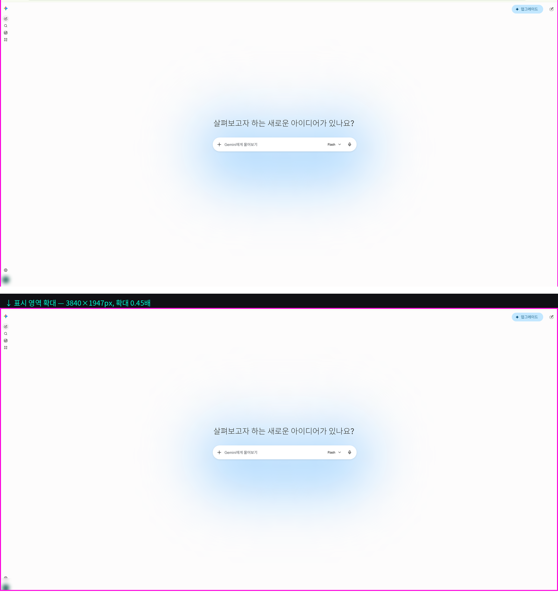
그림 1. Gemini 메인 화면 - 프롬프트 입력창 중심
화면 캡처 활용 가이드
삽입 의미 — 제미나이 모바일 앱 ↔ 데스크톱 동기화 (멀티 디바이스 작업 연속성) 설명 중 화면 조작이 필요한 지점입니다. 글로만 읽으면 위치를 찾기 어려운 부분을 눈으로 확인합니다.
기능 설명 — Gemini 메인 화면 - 프롬프트 입력창 중심
활용 방법 — 자활 업무에 적용할 때는 이 화면에서 확인한 경로를 그대로 반복하면 됩니다.
📘 [교재 내용]
[개념 이해]
크로스 플랫폼 동기화(Cross-Platform Synchronization): 구글 계정을 기반으로 제미나이 모바일 앱과 데스크톱 브라우저 환경이 실시간으로 연동되는 원리입니다.
인지적 연속성(Cognitive Continuity): 장치가 바뀌어도 작업 맥락이 유지되므로, 뇌의 작업 기억(Working Memory)을 리셋할 필요 없이 이전 작업에 즉각적으로 몰입할 수 있습니다.
활용 씬(Scene): 출장 중 자활사업장(예: 카페, 세차장)에서 스마트폰으로 현장 사진과 음성 메모를 제미나이 앱에 입력하면, 사무실 복귀 후 데스크톱 브라우저에서 해당 대화창을 열어 즉시 결과 보고서로 변환할 수 있습니다.
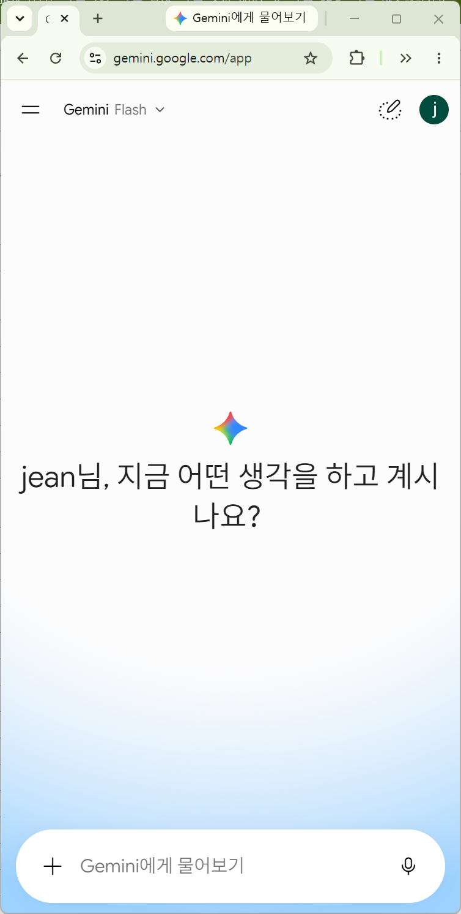
그림 2. 모바일 브라우저/앱 해상도 반응형 뷰 레이아웃
화면 캡처 활용 가이드
삽입 의미 — 제미나이 모바일 앱 ↔ 데스크톱 동기화 (멀티 디바이스 작업 연속성) 설명 중 화면 조작이 필요한 지점입니다. 글로만 읽으면 위치를 찾기 어려운 부분을 눈으로 확인합니다.
기능 설명 — 모바일 브라우저/앱 해상도 반응형 뷰 레이아웃
활용 방법 — 자활 업무에 적용할 때는 이 화면에서 확인한 경로를 그대로 반복하면 됩니다. · 확대 1.0배 인셋 포함
[💻 시연]
🗣️ [강사 멘트]
"제 화면을 주목해 주세요. 제가 지금 스마트폰 제미나이 앱을 열고, '인천 자활 카페 1호점 현장 점검 내용'을 음성으로 대충 말해보겠습니다. (강사 시연: 스마트폰에 대고 말함) '오늘 카페 위생 상태 양호함, 다만 재고 관리에 개선이 필요해 보임.' 자, 이제 데스크톱 브라우저의 제미나이를 새로고침 해볼까요? 방금 모바일에서 작성한 내용이 그대로 남아있죠? 이 클릭 한 번이 여러분의 인지적 에너지를 아껴줍니다!"
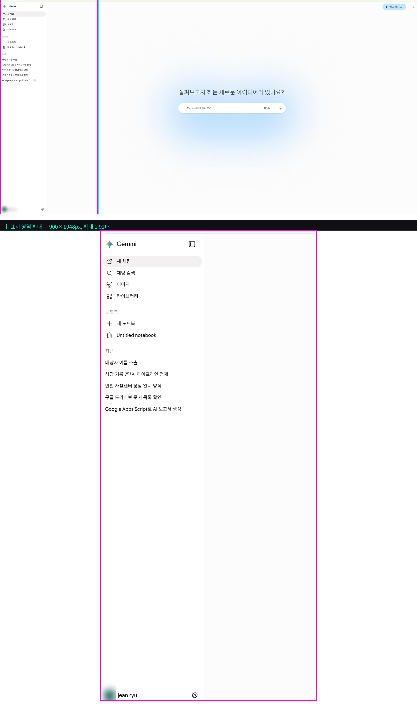
그림 3. 좌측 메뉴 클릭 → 과거 대화 목록(사이드바) 펼침 상태
화면 캡처 활용 가이드
삽입 의미 — 강사 시연 화면입니다. 설명하는 동안 수강생이 같은 화면을 찾을 수 있도록 배치했습니다.
기능 설명 — 좌측 메뉴 클릭 → 과거 대화 목록(사이드바) 펼침 상태
활용 방법 — 이 메뉴는 화면 다른 곳을 클릭하면 닫히므로, 필요한 항목을 먼저 확인한 뒤 선택하세요. · 확대 1.92배 인셋 포함
[✍️ 실습]
📘 [교재 내용]
가상 샘플데이터 상황: 여러분은 '새싹 세차장' 현장 점검을 마치고 이동 중인 실무자입니다.
실습 미션: 모바일 제미나이 앱에서 현장 메모를 남기고, PC 웹에서 이를 이어받아 보고서 초안으로 발전시키기.
실습 프롬프트 (모바일 앱 입력용):
> "오늘 새싹 세차장 현장 점검함. 참여자 5명 전원 출석. 세차 장비 작동 이상 없음. 다만, 겨울철 동파 방지재가 부족해서 추가 구매가 시급함. 이 내용을 바탕으로 짧은 메모를 남겨줘."
실습 프롬프트 (PC 웹 입력용 - 연동된 대화창에서 이어서 입력):
> "방금 남긴 현장 점검 메모를 바탕으로, 센터장님께 보고할 '일일 업무 보고서' 양식(제목, 일시, 참석자, 주요 내용, 특이사항 및 건의사항)으로 격식을 갖춰서 정리해 줘."
실습 체크리스트:
[ ] 스마트폰에 구글 제미나이 앱이 설치되어 있는가?
[ ] 스마트폰과 PC의 제미나이 로그인 계정이 동일한가?
[ ] 모바일에서 남긴 대화가 PC의 '최근 대화(Recent Chats)' 목록에 즉시 나타나는가?
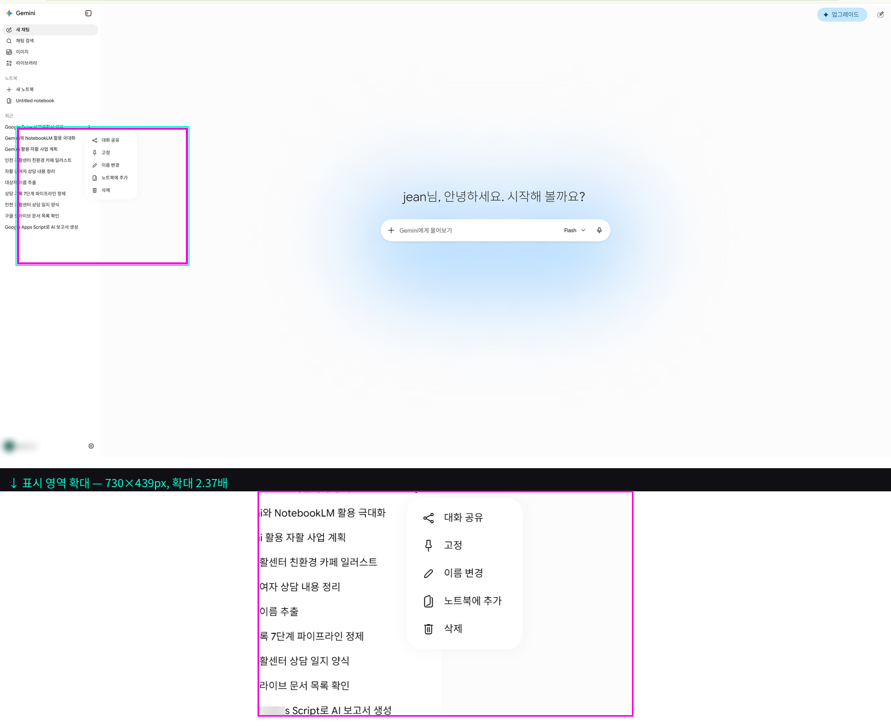
그림 4. 최근 대화 3점 메뉴 → 대화 삭제 및 이름 변경 옵션 드롭다운
화면 캡처 활용 가이드
삽입 의미 — 수강생이 직접 따라 해야 하는 실습 구간입니다. 화면과 대조하며 같은 상태를 만들어 봅니다.
기능 설명 — 최근 대화 3점 메뉴 → 대화 삭제 및 이름 변경 옵션 드롭다운
활용 방법 — 이 메뉴는 화면 다른 곳을 클릭하면 닫히므로, 필요한 항목을 먼저 확인한 뒤 선택하세요. · 확대 2.37배 인셋 포함
[✅ 검증]
📘 [역량 검증 루브릭]
상 (우수): 모바일에서 사진이나 음성을 활용하여 멀티모달 프롬프트를 입력하고, PC에서 이를 매끄럽게 보고서로 변환하여 출력까지 완료함.
중 (보통): 텍스트 기반으로 모바일과 PC 연동을 확인하고 기본 프롬프트를 이어받아 실행함.
하 (미흡): 계정 연동에 실패하거나 모바일/PC 간 대화 내역을 찾지 못함. (강사의 개별 지도가 필요한 단계)
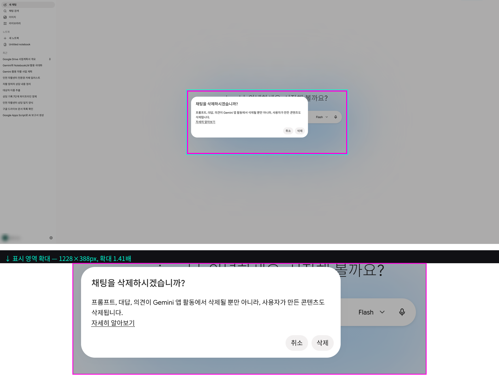
그림 5. 최근 대화 3점 메뉴 → 대화 상단 고정(Pin) 옵션
화면 캡처 활용 가이드
삽입 의미 — 실습 결과가 제대로 나왔는지 대조하는 기준 화면입니다.
기능 설명 — 최근 대화 3점 메뉴 → 대화 상단 고정(Pin) 옵션
활용 방법 — 이 메뉴는 화면 다른 곳을 클릭하면 닫히므로, 필요한 항목을 먼저 확인한 뒤 선택하세요. · 확대 1.41배 인셋 포함
[🚀 최적화]
📘 [Before & After 비교]
Before (도입 전): 현장에서 수첩에 메모 -> 사무실 복귀 -> 메모장 분실 위험 -> 수첩을 보며 한컴오피스/워드에 처음부터 다시 타이핑 (소요 시간: 30분, 피로도 🔴 상)
After (도입 후): 현장에서 제미나이 음성 메모 -> 사무실 복귀 -> PC 제미나이에서 '보고서로 써줘' 엔터 -> 복사 및 붙여넣기 (소요 시간: 3분, 피로도 🟢 하)
💡 [트러블슈팅 Q&A]
Q: 모바일에서 입력한 게 PC에서 안 보여요!
A: 99%의 경우 계정 불일치 문제입니다. 모바일 앱 우측 상단 프로필과 PC 웹 우측 상단 프로필의 구글 이메일 주소가 정확히 일치하는지 확인해 주세요.
활용 방법 — 이 메뉴는 화면 다른 곳을 클릭하면 닫히므로, 필요한 항목을 먼저 확인한 뒤 선택하세요. · 확대 1.92배 인셋 포함
1-2Docs 내보내기 서식 유지 워크플로우
🗣️ [강사 멘트]
"방금 제미나이가 멋진 보고서 초안을 써줬죠? 그런데 여기서 많은 분들이 복사(Ctrl+C)해서 한글이나 워드에 붙여넣기(Ctrl+V)를 하다가 양식이 다 깨져서 스트레스를 받으십니다. 애써 아낀 에너지를 서식 맞추느라 다 날려버리면 안 되겠죠? 이 과정에서 발생하는 짜증은 뇌의 코르티솔(스트레스 호르몬) 수치를 높입니다. 우리는 구글 Docs 내보내기 기능을 통해 아주 깔끔하고 우아하게 문서를 옮길 겁니다. 버튼 하나로 서식이 100% 유지되는 쾌감! 뇌에 도파민이 솟구치는 경험을 해보시죠."
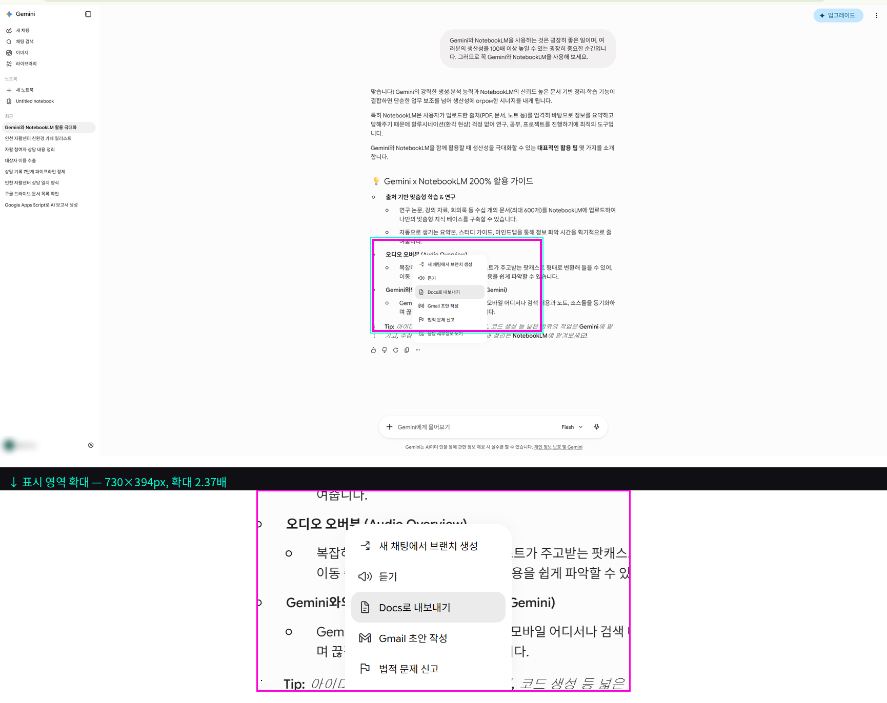
그림 7. Docs 및 Gmail 내보내기 공유 메뉴 열림 화면
화면 캡처 활용 가이드
삽입 의미 — Docs 내보내기 서식 유지 워크플로우 설명 중 화면 조작이 필요한 지점입니다. 글로만 읽으면 위치를 찾기 어려운 부분을 눈으로 확인합니다.
기능 설명 — Docs 및 Gmail 내보내기 공유 메뉴 열림 화면
활용 방법 — 이 메뉴는 화면 다른 곳을 클릭하면 닫히므로, 필요한 항목을 먼저 확인한 뒤 선택하세요. · 확대 2.37배 인셋 포함
📘 [교재 내용]
[개념 이해]
Export to Docs 기능: 제미나이가 생성한 텍스트(마크다운 기반의 굵은 글씨, 표, 글머리 기호 등)를 구글 문서(Google Docs) 형식으로 구조적 손실 없이 변환해 주는 네이티브 연동 기능입니다.
구조화된 데이터 유지(Structured Data Preservation): 텍스트의 시각적 위계(제목, 본문, 강조)를 그대로 유지하여 문서 편집의 인지적 마찰(Cognitive Friction)을 최소화합니다.
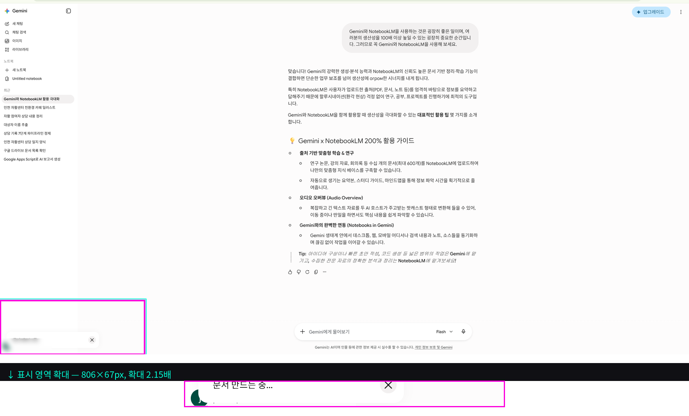
그림 8. Google Docs 문서 만드는 중 진행 상태 알림 토스트
화면 캡처 활용 가이드
삽입 의미 — Docs 내보내기 서식 유지 워크플로우 설명 중 화면 조작이 필요한 지점입니다. 글로만 읽으면 위치를 찾기 어려운 부분을 눈으로 확인합니다.
기능 설명 — Google Docs 문서 만드는 중 진행 상태 알림 토스트
활용 방법 — 자활 업무에 적용할 때는 이 화면에서 확인한 경로를 그대로 반복하면 됩니다. · 확대 2.15배 인셋 포함
[💻 시연]
🗣️ [강사 멘트]
"앞서 세차장 보고서를 만들었죠? 스크롤을 내려 답변 맨 아래를 보세요. 공유 아이콘(Share)이 있습니다. 클릭! 그리고 'Google 문서로 내보내기'를 누릅니다. 자, 화면 좌측 하단에 '문서 열기' 팝업이 뜨죠? 누르면... 완벽하게 서식이 잡힌 구글 문서가 생성되었습니다. 여기서 바로 인쇄를 하거나 PDF로 저장하면 끝입니다. 복붙하느라 서식 깨지는 스트레스, 이제 안녕입니다!"
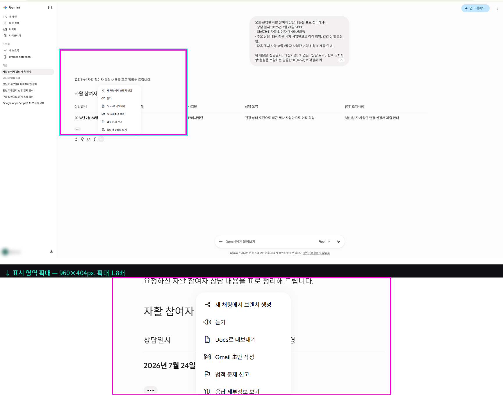
그림 9. 답변 하단 [공유/내보내기] 아이콘 클릭 → Google 문서로 내보내기 팝업
화면 캡처 활용 가이드
삽입 의미 — Docs 내보내기 서식 유지 워크플로우 설명 중 화면 조작이 필요한 지점입니다. 글로만 읽으면 위치를 찾기 어려운 부분을 눈으로 확인합니다.
기능 설명 — 답변 하단 [공유/내보내기] 아이콘 클릭 → Google 문서로 내보내기 팝업
활용 방법 — 이 메뉴는 화면 다른 곳을 클릭하면 닫히므로, 필요한 항목을 먼저 확인한 뒤 선택하세요. · 확대 1.8배 인셋 포함
[✍️ 실습]
📘 [교재 내용]
가상 샘플데이터 상황: 제미나이를 통해 '자활근로사업 참여자 월간 상담 일지' 표(Table)를 생성했습니다.
실습 미션: 생성된 표를 구글 Docs로 내보내어, 서식이 깨지지 않았는지 확인하고 문서 제목을 수정하기.
실습 프롬프트 (제미나이에 먼저 입력):
> "인천 자활센터 참여자 3명(홍길동, 김영희, 이철수)에 대한 월간 상담 일지 양식을 표 형태로 만들어줘. 열(Column)은 '이름, 출석률, 근로태도(상/중/하), 상담내용 요약, 특이사항'으로 구성해 줘. 내용은 가상으로 채워줘."
"여러분, 하루에 이메일 확인하고 과거 파일 찾는데 시간을 얼마나 쓰시나요? '작년에 썼던 사업계획서 어딨지?', '지자체에서 온 공문 메일 제목이 뭐였더라?' 이처럼 정보를 찾는(Search) 행위는 인간의 뇌를 가장 쉽게 지치게 만듭니다. 이제 직접 찾지 마세요. 제미나이에게 '비서' 역할을 부여할 겁니다. 구글 워크스페이스 익스텐션(확장 프로그램)을 켜고 @ 기호 하나만 치면, 여러분의 Gmail과 구글 드라이브가 제미나이의 뇌와 연결됩니다. 이건 단순한 검색이 아닙니다. 내 개인 데이터를 바탕으로 AI가 추론하고 요약해 주는, 진정한 의미의 '나만의 맞춤형 어시스턴트'가 탄생하는 순간입니다. 인지적 자유를 향해, 들어가 볼까요?"
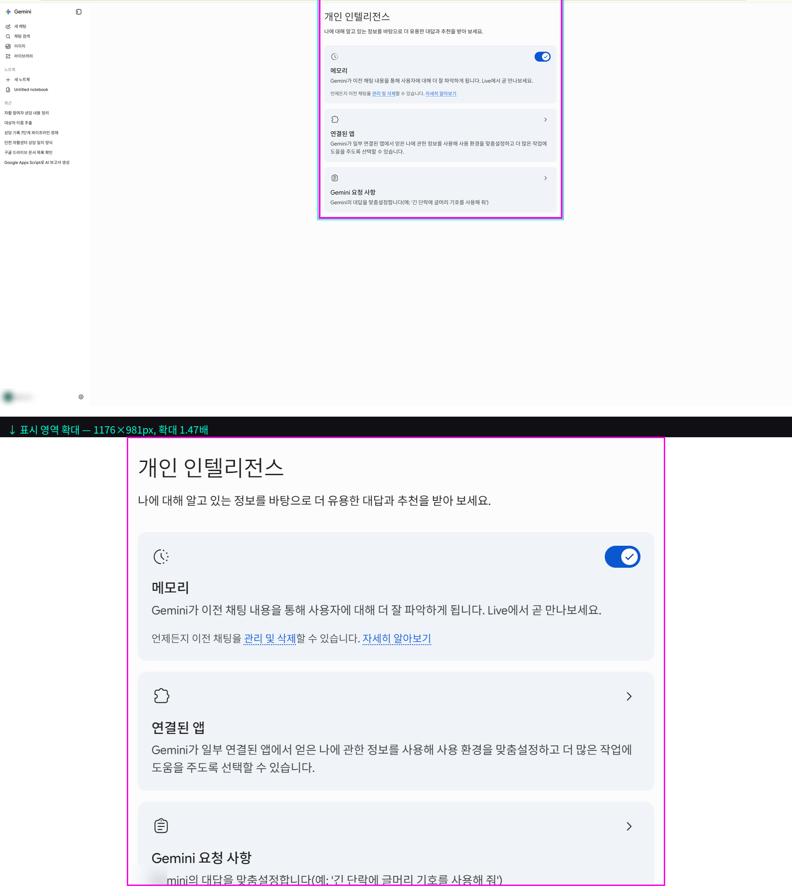
그림 14. 개인화 설정 페이지 - 개인 인텔리전스 및 데이터 메모리 (personalization-settings)
화면 캡처 활용 가이드
삽입 의미 — 실습 결과가 제대로 나왔는지 대조하는 기준 화면입니다.
기능 설명 — 개인화 설정 페이지 - 개인 인텔리전스 및 데이터 메모리 (personalization-settings)
활용 방법 — 최초 1회만 설정하면 이후에는 유지되므로, 교육 시작 전에 미리 맞춰두면 진행이 매끄럽습니다. · 확대 1.47배 인셋 포함
📘 [교재 내용]
[개념 이해]
워크스페이스 확장 프로그램(Workspace Extensions): 제미나이가 사용자의 명시적 허락 하에 개인의 Gmail, Google Drive, Google Docs 데이터에 접근하여 검색, 요약, 분석할 수 있도록 권한을 부여하는 기능입니다.
프롬프트 트리거(Prompt Trigger) @: 명령어 입력 창에 @를 입력하여 특정 앱(Gmail, Drive 등)을 강제로 호출하여 컨텍스트를 해당 서비스로 한정 짓는 행동 유도(Nudge) 기법입니다.
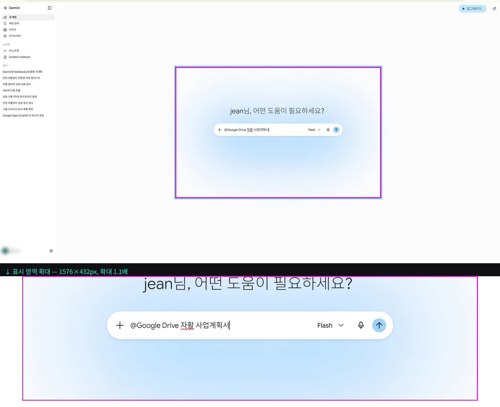
그림 15. @Google Drive 입력 후 특정 사업계획서 파일 검색 팝업
화면 캡처 활용 가이드
삽입 의미 — 구글 워크스페이스 익스텐션 연동 (@Gmail, @Drive 활용 실무) 설명 중 화면 조작이 필요한 지점입니다. 글로만 읽으면 위치를 찾기 어려운 부분을 눈으로 확인합니다.
기능 설명 — @Google Drive 입력 후 특정 사업계획서 파일 검색 팝업
활용 방법 — 이 메뉴는 화면 다른 곳을 클릭하면 닫히므로, 필요한 항목을 먼저 확인한 뒤 선택하세요. · 확대 1.1배 인셋 포함
[💻 시연]
🗣️ [강사 멘트]
"설정(톱니바퀴)에서 '확장 프로그램'에 들어가서 Google Workspace 스위치를 파란색(ON)으로 켭니다. 자, 이제 실제로 확인해 볼게요. 프롬프트 창에 칩니다. @Gmail 최근에 지자체(구청)에서 온 메일 중에 '자활사업'이라는 단어가 들어간 메일 3개만 찾아서 핵심 내용을 세 줄로 요약해 줘. (엔터) 보이시나요? 제미나이가 내 메일함을 순식간에 뒤져서 편지 봉투 아이콘과 함께 요약본을 제시합니다. 링크를 클릭하면 원본 메일로 바로 이동하죠. 이메일 지옥에서 해방되는 순간입니다!"
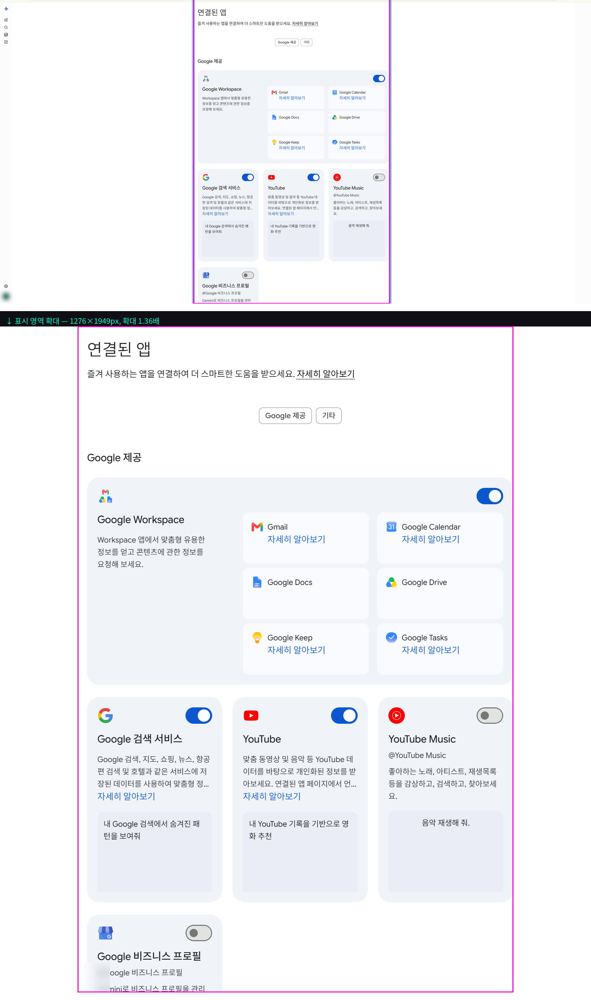
그림 16. 연결된 앱(Apps) 설정 페이지 - Workspace, YouTube 토글 목록 (신규 /apps)
화면 캡처 활용 가이드
삽입 의미 — 실습 결과가 제대로 나왔는지 대조하는 기준 화면입니다.
기능 설명 — 연결된 앱(Apps) 설정 페이지 - Workspace, YouTube 토글 목록 (신규 /apps)
활용 방법 — 최초 1회만 설정하면 이후에는 유지되므로, 교육 시작 전에 미리 맞춰두면 진행이 매끄럽습니다. · 확대 1.36배 인셋 포함
[✍️ 실습]
📘 [교재 내용]
가상 샘플데이터 상황: 여러분의 구글 드라이브에는 지난주에 작성한 '2026년 하반기 희망자활센터 사업계획서.pdf' 파일이 저장되어 있습니다. (실습을 위해 아무 문서나 드라이브에 업로드해 둡니다)
실습 미션: 확장 프로그램을 켜고, @Drive 명령어를 활용하여 내 드라이브에 있는 특정 문서의 내용을 제미나이에게 요약시키기.
실습 프롬프트:
> "@GoogleDrive 내 드라이브에서 '사업계획서'라는 제목이 포함된 가장 최근 문서를 찾아서, 그 문서의 목적과 주요 사업 내용 3가지를 글머리 기호로 요약해서 알려줘."
실습 체크리스트:
[ ] 제미나이 설정에서 '확장 프로그램(Extensions)' 메뉴로 들어가 Google Workspace를 활성화했는가?
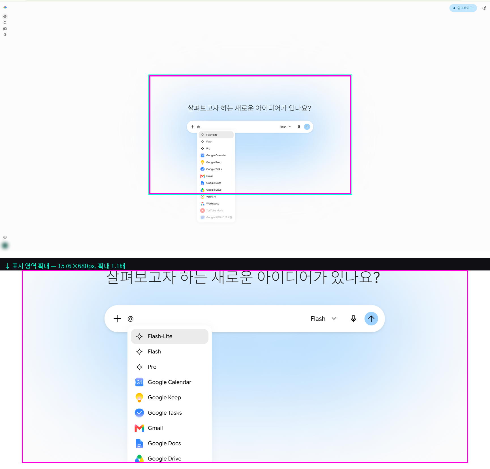
그림 17. 프롬프트 입력창에 @ 입력 시 팝업되는 Drive, Gmail 선택 메뉴
화면 캡처 활용 가이드
삽입 의미 — 수강생이 직접 따라 해야 하는 실습 구간입니다. 화면과 대조하며 같은 상태를 만들어 봅니다.
기능 설명 — 프롬프트 입력창에 @ 입력 시 팝업되는 Drive, Gmail 선택 메뉴
활용 방법 — 이 메뉴는 화면 다른 곳을 클릭하면 닫히므로, 필요한 항목을 먼저 확인한 뒤 선택하세요. · 확대 1.1배 인셋 포함
[ ] 프롬프트 창에 @를 입력했을 때 팝업 메뉴에서 Google Drive나 Gmail을 선택할 수 있는가?
[ ] 검색 결과에 나타난 문서 아이콘을 클릭하여 실제 원본 문서로 이동할 수 있는가?
[✅ 검증]
📘 [역량 검증 루브릭]
상 (우수): @Gmail과 @Drive를 연속적으로 활용하는 복합 프롬프트를 작성함. (예: "@Gmail로 최근 업무 지시 메일을 찾고, 관련된 기획서를 @Drive에서 찾아줘")
중 (보통): 단일 서비스(@Drive 등)를 호출하여 원하는 문서를 찾고 성공적으로 내용을 요약함.
하 (미흡): 확장 프로그램 활성화 스위치를 켜지 않아 연동에 실패하거나, 프롬프트에 @ 기호를 사용하지 않고 검색을 시도함.
[🚀 최적화]
📘 [Before & After 비교]
Before (도입 전): 메일함 접속 -> 검색어 '자활사업' 입력 -> 수십 개 메일 일일이 클릭해서 읽어봄 -> 중요한 내용 메모장에 복사 (소요 시간: 20분, 작업 기억 🔴 초과)
After (도입 후): 제미나이에 "@Gmail 자활사업 메일 요약해" 입력 끝 (소요 시간: 10초, 인지 부하 🟢 제로)
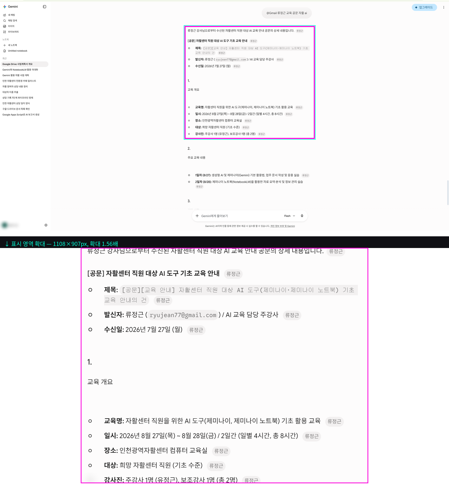
그림 18. @Gmail 입력 후 특정 수신 공문 메일 검색 결과 팝업
화면 캡처 활용 가이드
삽입 의미 — 구글 워크스페이스 익스텐션 연동 (@Gmail, @Drive 활용 실무) 설명 중 화면 조작이 필요한 지점입니다. 글로만 읽으면 위치를 찾기 어려운 부분을 눈으로 확인합니다.
기능 설명 — @Gmail 입력 후 특정 수신 공문 메일 검색 결과 팝업
활용 방법 — 이 메뉴는 화면 다른 곳을 클릭하면 닫히므로, 필요한 항목을 먼저 확인한 뒤 선택하세요. · 확대 1.56배 인셋 포함
💡 [트러블슈팅 Q&A]
Q: @Gmail로 찾으라고 했는데 "액세스 권한이 없습니다" 또는 "개인 정보에 접근할 수 없습니다"라고 나와요!
A: 확장 프로그램 설정이 꺼져 있거나, 구글 워크스페이스 관리자(센터 내 IT 담당자)가 보안 상의 이유로 전체 도메인에서 제미나이 연동을 막아둔 경우입니다. 실습용 개인 계정(gmail.com)에서는 정상 작동합니다.
본 교안은 인천지역 희망자활센터 실무자들의 업무 효율성 극대화를 위해 행동공학 및 인지과학 기반으로 설계되었습니다.
1-4모바일 라이브(Live) 멀티디바이스 (음성 대화)
🗣️ 강사 멘트 (동기부여 & 뇌과학적 접근):
"선생님들, 우리가 키보드로 타이핑을 할 때 뇌는 손가락 근육을 통제하고, 시각적으로 화면을 확인하며, 언어를 문자로 변환하는 복잡한 연산을 수행합니다. 인지 부하(Cognitive Load)가 엄청나죠. 하지만 '말'을 할 때는 다릅니다. 인류가 수십만 년 동안 진화시켜 온 자연스러운 소통 방식이기 때문입니다. 모바일 음성 AI를 활용하면, 시각 피질과 운동 피질에 가해지는 과부하를 줄이고, 그 에너지를 온전히 자활 참여자와의 '공감'과 '현장 파악'에 쏟을 수 있습니다. 즉각적인 음성 피드백은 우리 뇌의 보상 회로를 자극하여 작은 도파민 스파이크를 일으키고, 이는 업무의 피로도를 낮추는 핵심이 됩니다. 지금부터 스마트폰을 꺼내, AI와 대화하는 '진짜' 멀티태스킹을 경험해 보겠습니다."
📘 교재 내용:
모바일 환경에서의 AI 활용은 데스크톱 환경과 완전히 다른 사용자 경험(UX)을 제공합니다. 특히 '라이브(Live) 음성 대화' 기능은 현장 업무가 잦은 자활센터 실무자에게 필수적인 도구입니다. 손이 자유로운 상태에서 즉각적인 정보 검색, 상담 시뮬레이션, 아이디어 브레인스토밍이 가능합니다.
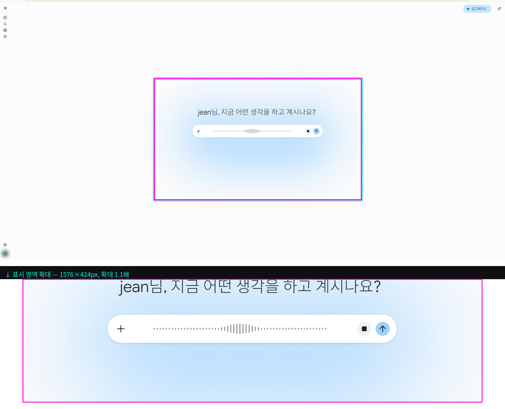
그림 19. Gemini Live 음성 대화 중 화면 (전면 실시간 오디오 시각화)
화면 캡처 활용 가이드
삽입 의미 — 모바일 라이브(Live) 멀티디바이스 (음성 대화) 설명 중 화면 조작이 필요한 지점입니다. 글로만 읽으면 위치를 찾기 어려운 부분을 눈으로 확인합니다.
기능 설명 — Gemini Live 음성 대화 중 화면 (전면 실시간 오디오 시각화)
활용 방법 — 자활 업무에 적용할 때는 이 화면에서 확인한 경로를 그대로 반복하면 됩니다. · 확대 1.1배 인셋 포함
[개념 이해]
멀티모달리티(Multimodality): 텍스트뿐만 아니라 음성, 시각(카메라) 정보를 동시에 처리하는 AI의 능력.
음성-텍스트 변환(STT) 및 텍스트-음성 변환(TTS): 사용자의 음성을 인식하고, AI의 답변을 자연스러운 음성으로 출력하여 딜레이 없는 실시간 양방향 소통을 구현합니다.
컨텍스트 유지: 대화가 진행되는 동안 AI는 이전의 맥락을 기억하여 연속적인 토론이 가능합니다.
[💻 시연]
🗣️ 강사 멘트: "제가 직접 제 스마트폰에서 Gemini 앱을 켜고, 현장에서 흔히 겪는 상황을 가정해 대화해 보겠습니다. 화면을 보지 않고 이어폰만 낀 상태로 AI에게 조언을 구하는 모습을 관찰해 보세요."
시연 시나리오: 외근 중, 다음 방문할 자활 사업장(카페)의 점검 포인트를 음성으로 요약해 달라고 요청.
시연 프롬프트: "안녕? 나 지금 자활참여자들이 운영하는 카페에 위생 및 서비스 점검을 하러 가고 있어. 5분 뒤에 도착인데, 내가 현장에서 반드시 확인해야 할 핵심 체크리스트 3가지만 빠르게 말해줄래?"
[✍️ 실습]
📘 상황 설정: 당신은 자활 사업 참여에 소극적이고 동기가 저하된 참여자와 10분 뒤 초기 상담을 진행해야 합니다. 차 안에서 이동하는 동안, AI와 음성 대화를 통해 '상담 시뮬레이션'을 진행하여 마음의 준비를 하려고 합니다.
실습 미션: 모바일 앱의 음성 대화(Live) 기능을 켜고, AI를 '소극적인 참여자'로 설정하여 3턴 이상의 대화를 주고받으세요.
구체적인 프롬프트 (음성으로 발화):
> "지금부터 너는 '자활 근로가 귀찮고, 해봤자 소용없다'고 생각하는 40대 참여자 역할을 해줘. 나는 자활센터 실무자야. 내가 먼저 상담을 시작할 테니까, 방어적인 태도로 짧게 대답해 봐. 내가 공감적 말하기(Motivational Interviewing) 기법으로 너의 동기를 끌어내는 연습을 할 거야. 시작하자. '안녕하세요, 오늘 오시느라 수고 많으셨습니다. 요즘 많이 피곤하시죠?'"
실습 체크리스트:
[ ] 스마트폰에서 AI 앱(Gemini 등)의 음성 대화 모드를 활성화했는가?
[ ] AI에게 명확한 페르소나(역할)를 부여했는가?
[ ] AI의 답변에 즉각적으로 반응하며 3회 이상 대화를 이어나갔는가?
[ ] 대화 종료 후, 텍스트로 기록된 대화 내용을 확인했는가?
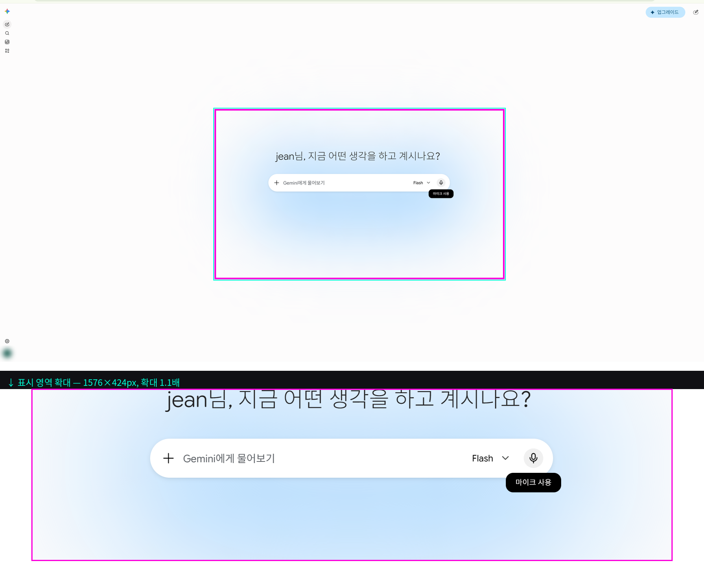
그림 20. Gemini Live 음성 대화 켜기 버튼 (마이크/파동 아이콘)
화면 캡처 활용 가이드
삽입 의미 — 수강생이 직접 따라 해야 하는 실습 구간입니다. 화면과 대조하며 같은 상태를 만들어 봅니다.
기능 설명 — Gemini Live 음성 대화 켜기 버튼 (마이크/파동 아이콘)
활용 방법 — 자활 업무에 적용할 때는 이 화면에서 확인한 경로를 그대로 반복하면 됩니다. · 확대 1.1배 인셋 포함
[✅ 검증] (역량 검증 루브릭)
우수 (3점): 음성 프롬프트를 명확하게 발음하고, AI의 답변 뉘앙스에 맞춰 유연하게 꼬리 질문을 이어감. 대화 종료 후 기록된 내용을 활용해 요약본을 생성할 수 있음.
보통 (2점): 음성 기능 활성화 및 1~2회의 단발성 질문은 가능하나, 연속적인 대화(Role-play)를 이끌어가는 데 주저함.
개선 필요 (1점): 음성 입력 대신 키보드 타이핑에 의존하거나, 마이크 권한 설정 등 기초적인 기기 조작에 어려움을 겪음.
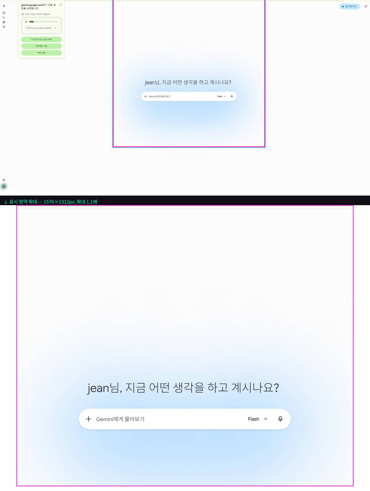
그림 21. 마이크 권한 허용 팝업 화면
화면 캡처 활용 가이드
삽입 의미 — 실습 결과가 제대로 나왔는지 대조하는 기준 화면입니다.
기능 설명 — 마이크 권한 허용 팝업 화면
활용 방법 — 이 메뉴는 화면 다른 곳을 클릭하면 닫히므로, 필요한 항목을 먼저 확인한 뒤 선택하세요. · 확대 1.1배 인셋 포함
[🚀 최적화] (Before/After)
Before: 현장 출장 전후, 이동하는 차 안이나 길거리에서 수첩을 꺼내 적거나 멍하니 시간을 보냄. 상담 전 긴장감이 높음.
After: 이동 시간을 활용해 이어폰으로 AI와 대화하며 생각의 구조를 잡음. 롤플레잉을 통해 실전 상담의 불안감을 낮추고 뇌의 '실행 기능(Executive Function)'을 워밍업함. 행동 유도(Nudge): 앱 아이콘을 홈 화면 가장 누르기 쉬운 곳에 배치하여 접근성을 극대화.
💡 트러블슈팅 Q&A
Q: 제가 말을 조금만 쉬어도 AI가 제 말을 끊고 대답해 버려요!
A: AI는 일정 시간 침묵이 이어지면 발화가 끝난 것으로 간주합니다. 이럴 때는 대화 시작 전에 "내가 말을 끝낼 때마다 '이상입니다'라고 말할 테니, 그때까지는 대답하지 말고 기다려줘"라고 규칙을 설정(Nudge)해 보세요.
"인간의 뇌는 엄청난 에너지를 소모하는 기관입니다. 그중에서도 시각 정보를 처리하는 데 뇌 전체 에너지의 약 30%가 쓰입니다. 어지러운 현장, 복잡한 서류, 빽빽한 영수증을 볼 때 눈이 피로하고 스트레스를 받는 것은 뇌가 비명을 지르고 있다는 증거입니다. 여기서 AI의 '비전(Vision) 기술'이 구원투수로 등장합니다. 카메라로 찰칵 찍어 AI에게 넘기면, AI가 시각 정보를 대신 분해하고 정리해 줍니다. 우리의 뇌는 이 무거운 '정보 식별' 작업에서 해방되어, 정리된 결과를 바탕으로 '어떤 결정을 내릴 것인가' 하는 고차원적인 전략적 사고에 집중할 수 있습니다. 이것이 바로 기술이 인지 부하를 줄여주는 완벽한 사례입니다."
📘 교재 내용:
최신 AI 모델(Gemini 3.1 Pro 등)은 단순히 이미지를 '보는' 것을 넘어, 이미지 내의 텍스트를 읽고(OCR), 객체를 식별하며, 공간적 맥락을 이해합니다. 현장 방문이 필수적인 자활사업 실무에서 사진 한 장은 수십 줄의 보고서를 대체할 수 있는 강력한 프롬프트가 됩니다.
[개념 이해]
컴퓨터 비전(Computer Vision): 기계가 디지털 이미지나 비디오로부터 의미 있는 정보를 추출하고 이해하는 기술.
공간 및 맥락 이해: 사진 속에 나열된 물건들의 배치, 인물들의 행동 양식을 분석하여 상황(위험 요소, 작업 진척도 등)을 추론하는 능력.
데이터 추출(OCR & Parsing): 손글씨나 인쇄된 문서 사진에서 텍스트를 추출하여 표(Table)나 엑셀 형식의 정형 데이터로 변환.
[💻 시연]
🗣️ 강사 멘트: "자활 사업단(예: 세차장, 공방)의 현장 사진을 AI에게 보여주겠습니다. 텍스트는 단 한 줄도 치지 않겠습니다. 사진을 첨부하고 음성으로 지시할 겁니다."
시연 시나리오: 도구가 어지럽게 널려 있는 공방 현장 사진을 촬영하여 안전 점검 수행.
시연 프롬프트 (사진 첨부 후): "이 사진은 우리 자활 공방의 현재 모습이야. 이 사진에서 산업 안전보건 측면에서 위험해 보이는 요소(예: 전선 노출, 정리되지 않은 날카로운 도구)를 찾아내고, 개선 방안을 표로 정리해 줘."
[✍️ 실습]
📘 상황 설정: 영수증 처리는 언제나 번거롭습니다. 현장 활동 중에 발생한 수기 영수증과 인쇄된 영수증 여러 장을 스마트폰 카메라로 찍어 한 번에 엑셀 데이터로 변환하려고 합니다.
실습 미션: 책상 위에 있는 임의의 영수증이나 문서(글씨가 있는 물건)를 사진으로 찍고, AI를 활용해 데이터를 구조화하세요.
구체적인 프롬프트:
> [영수증/문서 사진 1~2장 첨부] > "이 사진들에 있는 내용을 바탕으로 지출 내역을 정리하려고 해. > 다음 조건에 맞춰서 표(Table) 형태로 출력해 줘. > 1. 열(Column) 구성: 결제일자, 상호명, 품목, 결제금액 > 2. 글씨가 잘 안 보여서 확실하지 않은 부분은 '[확인요망]'이라고 표시할 것. > 3. 표 생성 후, 이 데이터를 엑셀로 복사하기 쉬운 CSV 형식으로도 코드 블록에 작성해 줘."
실습 체크리스트:
[ ] 스마트폰 AI 앱에서 카메라 아이콘을 눌러 실시간으로 사진을 촬영하고 첨부했는가?
[ ] 사진에서 추출하고자 하는 정보의 양식을 구체적(표 형식 등)으로 지시했는가?
[ ] AI가 손글씨나 흐릿한 글씨를 정확히 인식했는지 결과를 대조하여 검증했는가?
[✅ 검증] (역량 검증 루브릭)
우수 (3점): 이미지 첨부와 함께 명확하고 복합적인 조건(포맷 지정, 불확실성 처리 등)을 프롬프트로 제시하여 완벽하게 정형화된 데이터를 얻어냄.
보통 (2점): 이미지를 첨부하여 텍스트를 추출(OCR)하는 수준의 단순 명령("이거 읽어줘")은 수행할 수 있으나, 후속 가공은 수작업으로 진행함.
개선 필요 (1점): 이미지 첨부 기능을 찾지 못하거나, 초점이 맞지 않는 사진을 제공하여 AI의 인식 오류(Hallucination)를 유발함.
[🚀 최적화] (Before/After)
Before: 현장 점검 후 사무실로 돌아와 기억을 더듬으며 사진을 폴더별로 정리하고, 엑셀 창을 띄워 수기로 내용을 하나하나 타이핑함. (극도의 인지 피로 유발)
After: 현장에서 사진 촬영 즉시 AI에게 분석을 지시하고, 사무실에 복귀하기 전 이미 초안 보고서와 데이터 시트가 완성되어 있음. 실무자는 결과물의 '검수'만 수행.
💡 트러블슈팅 Q&A
Q: AI가 사진 속 숫자를 완전히 다르게 인식해서(Hallucination) 엉뚱한 금액을 말해요!
A: 비전 모델도 완벽하지 않습니다. 특히 조명이 어둡거나 반사가 심할 때 오류율이 높아집니다. 프롬프트에 "숫자 데이터는 100% 확신할 때만 적고, 조금이라도 모호하면 공란으로 둔 뒤 나에게 확인하라고 알려줘"라는 넛지(Nudge) 조건을 추가하여 기계의 오판을 방어해야 합니다.
1-6모델 선택 전략 (Gemini 3.7 Flash / 3.5 Flash Lite / 3.1 Pro / Extended)
📘 [Visual Asset: 교육 시각화 자료]
🗣️ 강사 멘트 (동기부여 & 뇌과학적 접근):
"심리학에는 '결정 피로(Decision Fatigue)'라는 개념이 있습니다. 매번 '이 작업에는 어떤 AI 모델을 써야 하지?' 고민하는 것은 불필요한 인지 부하를 발생시킵니다. 그래서 우리는 오늘 명확한 선택의 공식을 뇌에 각인시킬 겁니다. 가볍고 단순 반복적인 일에는 깃털처럼 빠른 '3.5 Flash Lite'나 '3.7 Flash', 심층적인 분석이 필요할 땐 묵직한 '3.1 Pro', 그리고 코딩이나 초거대 데이터 처리의 끝판왕이 필요할 땐 'Extended' 확장 모델. 이 4단계 공식만 뇌에 심어두면, 도구 선택에 에너지를 쓰지 않고 즉각적인 작업 몰입(Flow) 상태로 들어갈 수 있습니다."
📘 교재 내용:
최신 Gemini 라인업은 작업의 복잡도와 요구되는 속도에 따라 전략적으로 선택해야 합니다. 모든 작업에 가장 무겁고 똑똑한 모델을 쓰는 것은 효율성 낭비입니다. (출처: Google DeepMind 최신 릴리스 노트)
[개념 이해]
Gemini 3.5 Flash Lite: 극한의 속도와 저비용에 맞춰진 경량 모델. 단순 텍스트 요약, 데이터 포맷 변환 등 단순 반복 업무를 지연 없이 처리하여 작업 리듬을 끊지 않습니다.
Gemini 3.7 Flash: 속도와 성능의 완벽한 밸런스를 갖춘 주력 모델. 대용량 문서 분석, 시각 비전(이미지) 처리, 멀티모달 상호작용에서 빠르면서도 매우 우수한 결과를 냅니다.
Gemini 3.1 Pro: 복잡한 추론, 긴 문맥(Long-context) 이해, 심층적인 문제 해결에 특화된 전문가 모델. 복잡한 정책 해석, 기획안 작성 등 딥 리서치가 필요할 때 필수적입니다.
Gemini Extended (확장 모델): 기존의 컨텍스트 한계를 뛰어넘어 초거대 데이터셋(수천 장의 문서, 전체 코드베이스)을 한 번에 분석하거나 복잡한 코딩 아키텍처를 설계할 때 투입되는 하이엔드 모델입니다.
[💻 시연]
🗣️ 강사 멘트: "동일한 상황에서 모델 간의 응답 시간과 '추론의 깊이'를 직관적으로 비교해 보겠습니다."
3.1 Pro / Extended: 딜레이가 발생하지만, 이전 법령과의 차이점을 심층 분석하여 자활 실무에 미치는 영향까지 추론함 (깊이 중심).
[✍️ 실습]
📘 상황 설정: 각 상황에 가장 적합한 모델을 선택(매칭)하는 전략 게임입니다.
상황 시나리오 (가상 데이터):
고객 만족도 주관식 답변(50줄)을 긍정/부정으로 단순 분류할 때 -> [ 선택: 3.5 Flash Lite ]
민원 응대 스크립트를 현장 상황에 맞게 빠르게 다듬을 때 -> [ 선택: 3.7 Flash ]
100페이지 분량의 자활사업 지침서(PDF)를 분석하여 우리 센터 운영 방향을 기획할 때 -> [ 선택: 3.1 Pro ]
수년간 누적된 엑셀 매출 데이터 전부와 타 센터의 운영 사례 문서를 한 번에 입력받아 새로운 수익 창출 앱/웹서비스 코드를 개발할 때 -> [ 선택: Extended ]
[✅ 검증] (역량 검증 루브릭)
우수 (3점): Task의 특성(단순 요약 vs 심층 추론 vs 코딩)을 파악하여 본능적으로 4가지 모델을 스위칭하며 시간 효율을 극대화함.
보통 (2점): 모델 간 차이는 알지만, 실무에서 관성적으로 기본값(3.7 Flash)만 고집함.
개선 필요 (1점): 단순 번역에 Extended를 써서 자원을 낭비하거나, 복잡한 정책 분석에 Flash Lite를 써서 환각(거짓 정보)을 겪음.
[🚀 최적화] (Before/After)
Before: 모델 차이를 몰라 무거운 모델로 단순 작업을 시키며 딜레이를 겪거나, 가벼운 모델로 복잡한 분석을 시켜 오류를 발생시킴.
After: "가벼운 일엔 Lite/Flash, 무거운 일엔 Pro/Extended" 공식이 뇌에 각인되어 무의식적으로 최적의 도구를 선택, 도구 선택에 드는 망설임이 줄어듦.
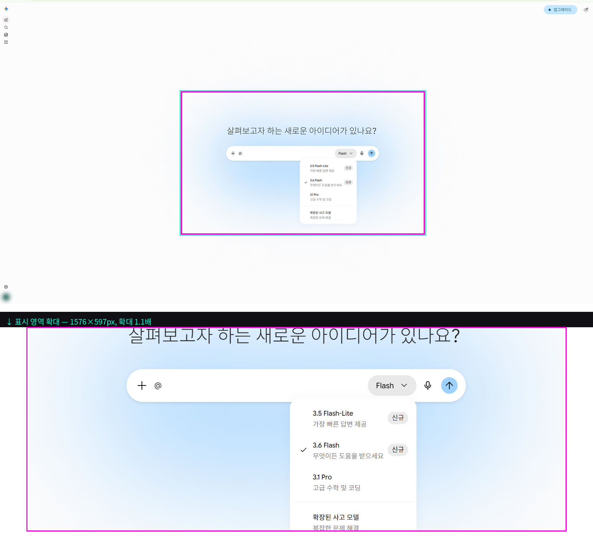
그림 22. 상단 모델 선택 드롭다운 클릭 → Gemini 3.7 Flash / 3.1 Pro 선택 창
화면 캡처 활용 가이드
삽입 의미 — 모델 선택 전략 (Gemini 3.7 Flash / 3.5 Flash Lite / 3.1 Pro / Extended) 설명 중 화면 조작이 필요한 지점입니다. 글로만 읽으면 위치를 찾기 어려운 부분을 눈으로 확인합니다.
기능 설명 — 상단 모델 선택 드롭다운 클릭 → Gemini 3.7 Flash / 3.1 Pro 선택 창
활용 방법 — 이 메뉴는 화면 다른 곳을 클릭하면 닫히므로, 필요한 항목을 먼저 확인한 뒤 선택하세요. · 확대 1.1배 인셋 포함
1-7임시 채팅(Temporary Chat) 보안 가이드 (참여자 개인정보 보호)
📘 [Visual Asset: 교육 시각화 자료]
📘 [개념 이해]
자활센터 실무자로서 대상자(참여자)의 민감한 개인정보(사례관리 기록, 재무 상황, 건강 상태 등)를 다룰 때가 많습니다. 일반적인 AI 채팅은 대화 내용이 학습 데이터로 활용될 여지가 있어 보안에 취약할 수 있습니다. '임시 채팅' 기능은 대화 종료 시 기록이 남지 않고 AI 학습에도 사용되지 않도록 차단하는 '디지털 파쇄기'와 같습니다.
🗣️ [강사 멘트]
"선생님들, 우리가 상담 일지를 쓸 때 가장 두려운 것이 무엇인가요? 바로 '정보 유출'입니다. 우리의 뇌, 특히 편도체(Amygdala)는 불확실한 위협 앞에서 가장 크게 반응하며 스트레스 호르몬인 코르티솔을 분비합니다. '혹시 이 정보가 어디로 새어나가면 어쩌지?' 하는 불안감은 우리의 인지적 여력을 갉아먹습니다. 오늘 배우실 '임시 채팅'은 바로 이 편도체를 진정시키는 가장 강력한 신경안정제입니다. 클릭 한 번으로 모든 흔적이 사라집니다. 안심하고 본연의 상담 업무에만 집중할 수 있게 되는 뇌의 자유를 만끽해 보십시오."
💻 [시연]
제미나이(Gemini) 또는 챗GPT 화면 상단의 모델 선택창 옆 '옵션' 또는 '프로필' 클릭
'임시 채팅(Temporary Chat)' 또는 '기록 끄기' 토글 버튼 활성화
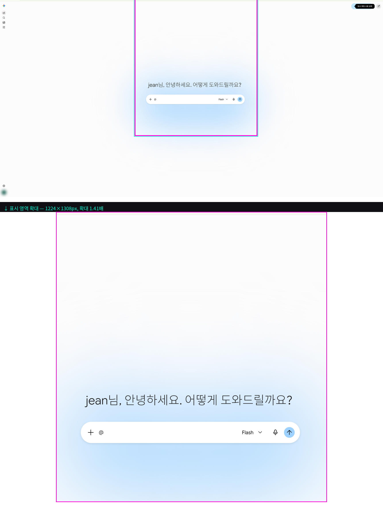
그림 23. 임시 채팅 아이콘/토글 클릭 → 활성화 동작 상태
화면 캡처 활용 가이드
삽입 의미 — 임시 채팅(Temporary Chat) 보안 가이드 (참여자 개인정보 보호) 설명 중 화면 조작이 필요한 지점입니다. 글로만 읽으면 위치를 찾기 어려운 부분을 눈으로 확인합니다.
기능 설명 — 임시 채팅 아이콘/토글 클릭 → 활성화 동작 상태
활용 방법 — 자활 업무에 적용할 때는 이 화면에서 확인한 경로를 그대로 반복하면 됩니다. · 확대 1.41배 인셋 포함
화면 상단에 '임시 채팅 중'이라는 배지가 나타나는지 확인
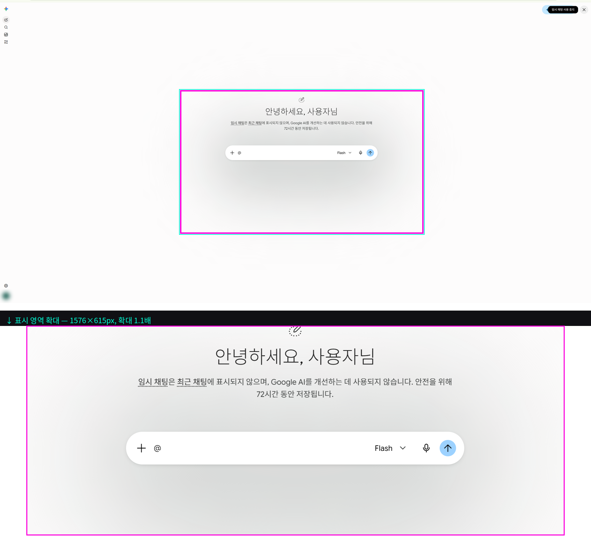
그림 24. 상단에 '임시 채팅 중' 배지가 떠 있는 프롬프트 화면
화면 캡처 활용 가이드
삽입 의미 — 실습 결과가 제대로 나왔는지 대조하는 기준 화면입니다.
기능 설명 — 상단에 '임시 채팅 중' 배지가 떠 있는 프롬프트 화면
활용 방법 — 자활 업무에 적용할 때는 이 화면에서 확인한 경로를 그대로 반복하면 됩니다. · 확대 1.1배 인셋 포함
샘플 텍스트 입력 후 브라우저 새로고침을 통해 기록이 즉시 소멸됨을 증명
✍️ [실습]
상황 설정: 인천 자활 참여자 '김철수(가명)'님의 부채 탕감 및 주거 지원 연계를 위한 사례관리 요약본을 AI로 다듬어야 함.
실습 체크리스트:
[ ] 임시 채팅 모드 활성화 확인 (화면 상단 배지 확인)
[ ] 민감 정보가 포함된 프롬프트 작성 및 입력
[ ] 결과물 복사 후 로컬 한글(hwp) 파일에 붙여넣기
[ ] 채팅창 종료 후 기록이 남지 않았는지 좌측 사이드바 확인
프롬프트:
다음은 자활 참여자의 사례관리 초안입니다. 공식적인 공문서 스타일로 다듬어주세요.
[초안] 참여자 김철수(55세), 현재 부채 3천만원, 월세 3개월 밀림. 일할 의지는 강한데 몸이 안 좋아서 근로유지형 사업단에 배치됨.
✅ [검증]
역량 검증 루브릭:
탁월 (3점): 임시 채팅을 활성화하고, 민감 정보를 가명 처리하여 입력한 뒤 결과물만 별도 저장, 흔적을 완벽히 소멸시킴.
우수 (2점): 임시 채팅을 활성화하여 작업을 완료함.
보통 (1점): 기능 위치는 찾았으나, 습관적으로 일반 채팅창에 민감 정보를 입력할 뻔함.
🚀 [최적화] (도입 전/후 비교)
Before: 민감한 내용이 유출될까 두려워 AI 사용 자체를 꺼림. 모든 사례관리 일지를 수기로 처음부터 끝까지 작성하느라 야근 발생. (인지 과부하 상태)
After: 임시 채팅의 확실한 보안성을 인지한 후, 정보 유출 걱정 없이 초안을 작성하게 되어, 남는 집중력을 참여자와의 상담에 쓸 수 있음.
❓ [트러블슈팅 Q&A] Q: 깜빡하고 일반 채팅으로 민감 정보를 물어봤어요! A: 즉시 좌측 사이드바에서 해당 채팅 기록을 찾아 삭제(휴지통 아이콘)하십시오. 구글 설정 - 'Gemini 앱 활동'에서 특정 시간대의 기록을 일괄 삭제할 수도 있습니다. 🔗 구글 공식 도움말: Gemini 앱 활동 관리 및 삭제
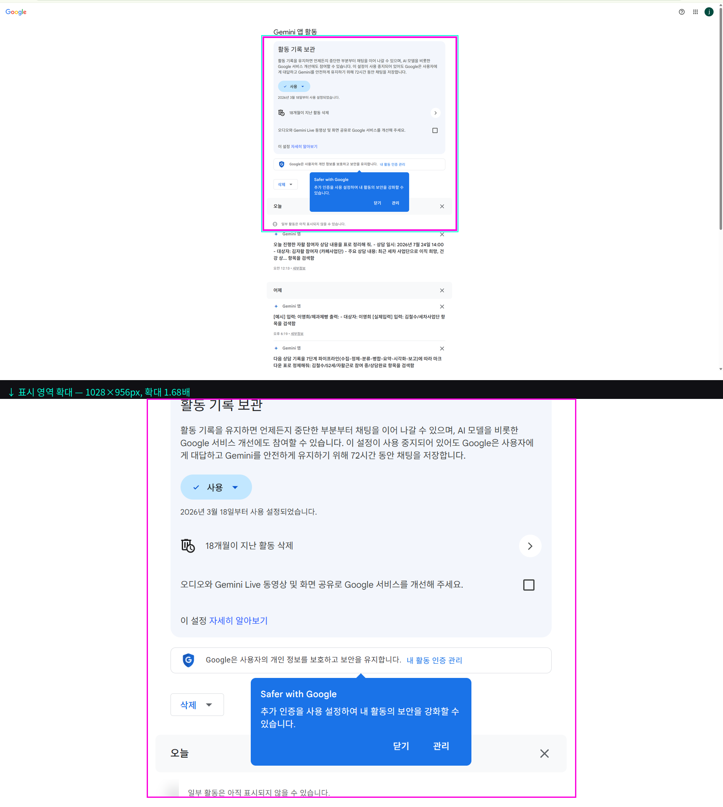
그림 25. Gemini 활동 관리 및 프라이버시 설정 페이지
화면 캡처 활용 가이드
삽입 의미 — 임시 채팅(Temporary Chat) 보안 가이드 (참여자 개인정보 보호) 설명 중 화면 조작이 필요한 지점입니다. 글로만 읽으면 위치를 찾기 어려운 부분을 눈으로 확인합니다.
기능 설명 — Gemini 활동 관리 및 프라이버시 설정 페이지
활용 방법 — 최초 1회만 설정하면 이후에는 유지되므로, 교육 시작 전에 미리 맞춰두면 진행이 매끄럽습니다. · 확대 1.68배 인셋 포함
개인 인텔리전스 최적화(Custom Instructions / Memory)는 AI가 여러분의 직책, 주요 업무, 선호하는 문체, 자주 쓰는 전문 용어 등을 미리 기억하도록 설정하는 기능입니다. 매번 "나는 인천지역 자활센터 사례관리자인데..."라고 설명할 필요 없이, AI가 항상 나의 업무적 맥락을 베이스라인(Baseline)으로 깔고 답변하게 만듭니다.
🗣️ [강사 멘트]
"심리학에는 '점화 효과(Priming Effect)'라는 것이 있습니다. 먼저 제시된 정보가 이후의 인지 과정에 무의식적으로 영향을 미치는 현상이죠. 우리가 AI에게 매번 배경 설명을 하는 것은 자동차 시동을 걸 때마다 엔진을 새로 조립하는 것과 같습니다. 이는 엄청난 '인지적 마찰(Cognitive Friction)'을 일으킵니다. 오늘 우리의 AI에게 '나만의 페르소나'를 심어줄 겁니다. 이제 AI는 여러분이 말하지 않아도 여러분이 원하는 톤앤매너로, 자활 사업의 맥락에 딱 맞는 답변을 척척 내놓을 것입니다. 반복되는 지시에서 해방될 때 터져 나오는 도파민을 느껴보세요!"
💻 [시연]
설정(Settings) -> 맞춤 설정(Custom Instructions) 또는 메모리(Memory) 메뉴 진입
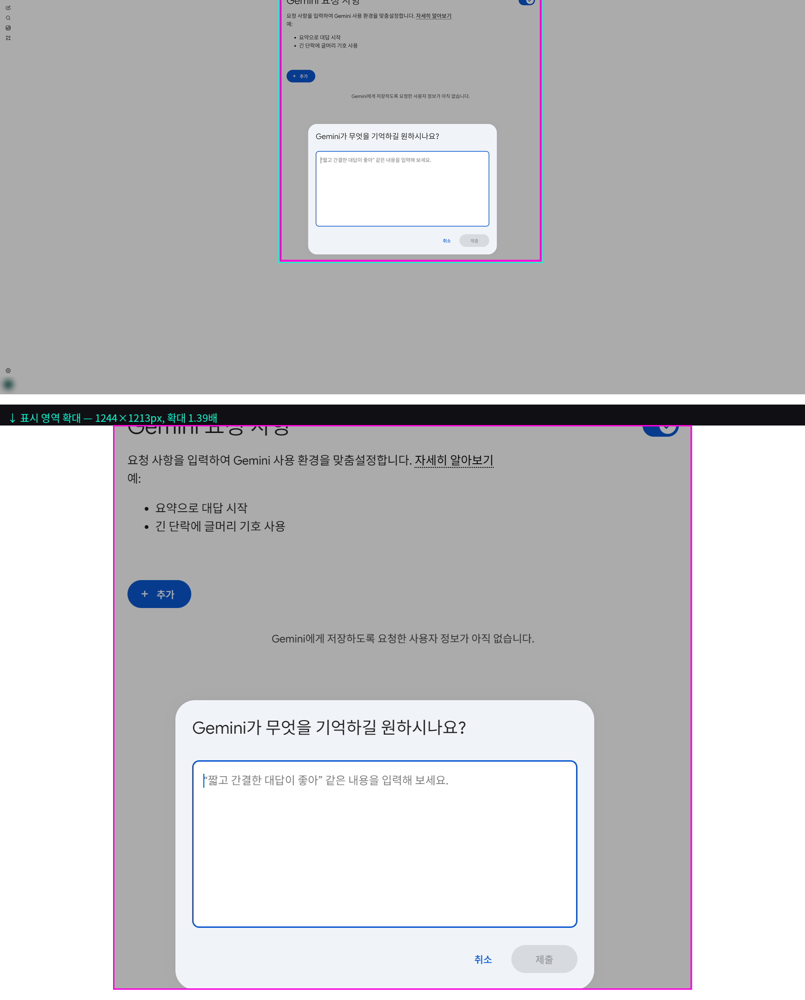
그림 26. Gemini 맞춤 설정 (Saved Info) 입력 팝업창 및 실무 프롬프트 모범 작성 예시
화면 캡처 활용 가이드
삽입 의미 — 개인 인텔리전스(Personal Intelligence) 최적화 (업무 스타일 학습) 설명 중 화면 조작이 필요한 지점입니다. 글로만 읽으면 위치를 찾기 어려운 부분을 눈으로 확인합니다.
기능 설명 — Gemini 맞춤 설정 (Saved Info) 입력 팝업창 및 실무 프롬프트 모범 작성 예시
활용 방법 — 이 메뉴는 화면 다른 곳을 클릭하면 닫히므로, 필요한 항목을 먼저 확인한 뒤 선택하세요. · 확대 1.39배 인셋 포함
[나에 대한 정보] 란에 "인천 자활센터 사례관리자, 친절하지만 단호한 톤 선호" 입력
[AI가 어떻게 응답하길 원하는가?] 란에 "항상 사회복지 전문 용어(예: 라포 형성, 자원 연계)를 적절히 사용하고, 3단락 이내로 요약해서 답변할 것" 입력
저장 후 새로운 채팅을 열어 간단한 질문으로 스타일 변화 확인
✍️ [실습]
상황 설정: 나만의 맞춤 설정을 등록하고, AI가 내 지시를 기억하는지 테스트하기.
실습 체크리스트:
[ ] 설정 메뉴에서 맞춤 설정(Custom Instructions) 활성화
[ ] 1번 항목(사용자 정보)에 소속과 직무 작성
[ ] 2번 항목(응답 스타일)에 출력 포맷(예: 글머리 기호 사용, 항상 결론부터) 작성
[ ] 새 채팅에서 테스트 프롬프트 실행
프롬프트:
(맞춤 설정 저장 후)
오늘 방문한 참여자 상담 결과를 요약해줘. (상담 내용: 취업 알선을 거부하고 계속 불만을 표출함. 30분간 경청 후 다음 주 재상담 예약)
(결과물이 사회복지사의 톤앤매너로 자동 출력되는지 확인)
✅ [검증]
역량 검증 루브릭:
탁월 (3점): 자신의 업무 특성(자활근로, 희망저축계좌 등)을 구체적인 키워드로 등록하여 AI 답변의 품질을 크게 높임.
우수 (2점): 기본적인 직무와 선호 문체를 등록하고 테스트를 완료함.
보통 (1점): 등록은 했으나, 응답 스타일 지시가 너무 모호하여(예: '잘 써줘') 큰 차이가 없음.
After: 짧은 핵심 지시어만 던져도 즉시 실무에 투입 가능한 완성도 높은 초안이 생성됨.
❓ [트러블슈팅 Q&A] Q: 맞춤 설정을 했는데도 AI가 자꾸 딴소리를 해요. A: 설정 내용이 너무 길거나 상충되는 지시가 섞여 있으면 AI가 혼란을 겪습니다. 가장 중요한 원칙 3가지만 간결하게 불릿 포인트(Bullet Point) 형태로 수정해 보세요. 🔗 구글 공식 도움말: 개인화 기능 사용하기
1-9예약 작업(Scheduled Tasks) 고도화 (루틴 자동화)
📘 [개념 이해]
예약 작업(Scheduled Tasks)은 정해진 시간이나 특정 트리거(Trigger)가 발생했을 때 AI가 자동으로 지정된 작업을 수행하게 만드는 자동화 기법입니다. 구글 워크스페이스(Google Workspace)와의 연동, 또는 재피어(Zapier) / 메이크(Make)와 같은 노코드(No-code) 자동화 툴을 결합하여 매일/매주 반복되는 데이터 수집, 메일 발송, 리포트 생성을 스스로 알아서 하도록 세팅합니다.
🗣️ [강사 멘트]
"선생님들, '선택의 패러독스(Paradox of Choice)'를 아시나요? 인간의 뇌는 하루에 내릴 수 있는 의사결정의 양(Willpower)이 정해져 있습니다. 매주 금요일 오후, 주간 보고서를 취합하고 이메일을 보내는 단순 반복 작업은 우리의 소중한 의지력을 낭비하게 만듭니다. 우리는 오늘 '넛지(Nudge)의 자동화'를 배울 겁니다. 시스템이 알아서 금요일 오후 4시에 초안을 내 책상(이메일)에 올려두도록 넛지를 설계하는 것이죠. 이제 여러분은 '실행자'에서 시스템을 지휘하는 '관리자'로 진화합니다. 남는 에너지를 진정으로 창의적인 기획에 쏟아부으세요!"
💻 [시연]
Google Workspace 통합(Extensions) 기능 활성화 확인
프롬프트 창에 "@Gmail 내일 아침 9시에 팀원들에게 '주간 회의 안건 취합' 메일을 보내도록 초안을 작성하고 임시보관함에 넣어줘" 시연
(심화) Zapier 연동 화면을 띄워 '매일 아침 8시 -> 날씨 및 자활사업 관련 뉴스 스크랩 -> 슬랙/카카오톡 전송' 자동화 흐름 1분 요약 시연
✍️ [실습]
상황 설정: 매주 월요일 아침 팀 회의를 위한 '전주 실적 요약' 메일 초안을 자동으로 생성하여 임시보관함에 넣기.
실습 체크리스트:
[ ] 확장 프로그램(Extensions) 메뉴에서 Google Workspace (Gmail, Docs 등) 활성화
[ ] @를 사용하여 특정 앱(Gmail) 호출
[ ] 명확한 시간과 작업 내용이 포함된 프롬프트 작성
[ ] Gmail 임시보관함에 실제 초안이 생성되었는지 확인
프롬프트:
@Gmail 다음 주 월요일 아침 8시에 발송할 이메일 초안을 작성해서 임시보관함에 저장해줘.
수신자: 팀원 전체
제목: [공지] 금주 자활근로 사업단 주간 회의 안건 공유
내용: 각 사업단별 특이사항을 명일 오전 10시까지 회신 부탁드린다는 내용.
✅ [검증]
역량 검증 루브릭:
탁월 (3점): 확장 프로그램을 완벽히 활용하여 Gmail 임시보관함 저장뿐만 아니라, Google Docs에 주간회의록 템플릿까지 자동 생성함.
우수 (2점): 지시한 대로 Gmail 임시보관함에 정확한 메일 초안을 생성함.
보통 (1점): 프롬프트는 작성했으나 확장 프로그램 연동을 켜지 않아 실패함. (재시도하여 성공)
🚀 [최적화] (도입 전/후 비교)
Before: 매주 정해진 시간마다 알람을 맞추고 수동으로 폼을 복사하여 이메일을 발송함. 바쁘면 까먹고 누락됨.
After: 시스템이 루틴을 통제함. 실무자는 금요일 오후 퇴근 전, 또는 월요일 출근 직후 임시보관함의 '보내기' 버튼 하나만 누르면 됨. 인지적 짐(Cognitive Load) 완전 해소.
❓ [트러블슈팅 Q&A] Q: "예약 발송"까지 한 번에 해주면 안 되나요? A: 현재 AI 안전 가이드라인에 따라, 이메일의 최종 '발송(Send)' 버튼은 인간이 직접 확인하고 누르도록(Human-in-the-loop) 설계되어 있습니다. 이는 치명적인 실수(오발송)를 막기 위한 안전장치입니다.
Gems(또는 커스텀 GPTs)는 특정한 목적이나 역할에 맞게 '시스템 프롬프트', '참조 지식(지침서, 매뉴얼 파일)', '도구(웹 검색 등)'를 미리 세팅하여 독립된 앱처럼 만들어 두는 기능입니다. '자활근로 지침서'를 통째로 외우고 있는 '규정 안내 봇', 참여자의 강점을 분석해주는 '직업 상담 봇' 등 다양한 용도의 비서 군단(Multi-agent)을 거느릴 수 있습니다.
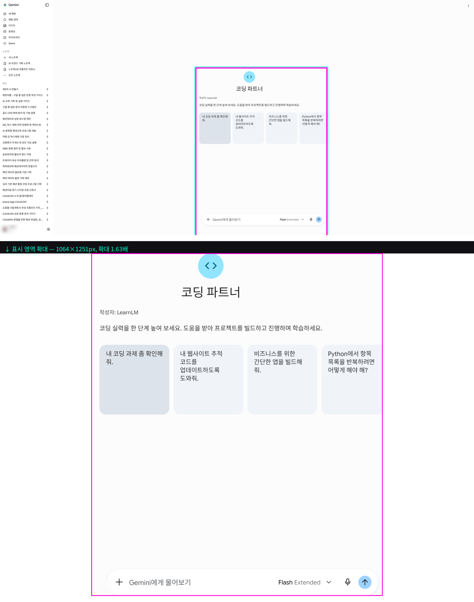
그림 27. 생성한 Custom Gem 실행 시 프롬프트 입력창 위에 뜨는 Starter 버튼들
화면 캡처 활용 가이드
삽입 의미 — Gems(나만의 AI 비서) 빌드 기초 (반복 상담 자동화) 설명 중 화면 조작이 필요한 지점입니다. 글로만 읽으면 위치를 찾기 어려운 부분을 눈으로 확인합니다.
기능 설명 — 생성한 Custom Gem 실행 시 프롬프트 입력창 위에 뜨는 Starter 버튼들
활용 방법 — 출력 형식이 기대와 다르면 프롬프트의 과업(T)·제약(C) 항목을 조정한 뒤 다시 실행합니다. · 확대 1.63배 인셋 포함
🗣️ [강사 멘트]
"우리의 뇌는 '전문가'에게 기대려는 강한 본능이 있습니다. 하지만 현실에서는 막힐 때마다 물어볼 수 있는 시니어(Senior)가 옆에 항상 있지는 않죠. 젬스(Gems)는 여러분이 직접 만들어 고용하는 무급의 초특급 시니어입니다! 200페이지가 넘는 골치 아픈 '자활사업 안내 지침서'를 젬스에게 통째로 먹이세요. 그리고 질문하십시오. 두껍고 지루한 텍스트 더미를 뒤지느라 고갈되던 도파민 시스템이, 즉각적이고 정확한 답변을 얻는 순간 즉각적인 성취감으로 이어집니다. 여러분만의 비서 군단을 구축하는 첫걸음, 지금 시작합니다."
💻 [시연]
Gemini Advanced 화면 좌측 메뉴에서 'Gem(젬) 만들기' 클릭
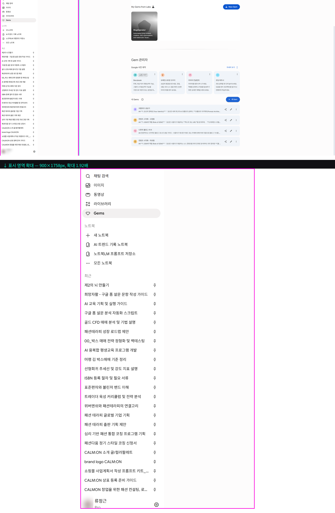
그림 28. 좌측 메뉴 Gems 클릭 → 새 Gem 만들기 버튼 위치
화면 캡처 활용 가이드
삽입 의미 — Gems(나만의 AI 비서) 빌드 기초 (반복 상담 자동화) 설명 중 화면 조작이 필요한 지점입니다. 글로만 읽으면 위치를 찾기 어려운 부분을 눈으로 확인합니다.
기능 설명 — 좌측 메뉴 Gems 클릭 → 새 Gem 만들기 버튼 위치
활용 방법 — 이 메뉴는 화면 다른 곳을 클릭하면 닫히므로, 필요한 항목을 먼저 확인한 뒤 선택하세요. · 확대 1.92배 인셋 포함
[이름]: "자활 규정 마스터"
[역할 및 안내(Instructions)]: "너는 보건복지부 자활사업 규정을 완벽하게 숙지한 20년 차 실무자야. 사용자가 질문하면 반드시 업로드된 지침서를 기반으로 페이지 번호와 함께 답변해."
[지식(Knowledge) 업로드]: (가상의) '2024_자활사업안내_지침서.pdf' 파일 첨부
생성 후 테스트 질문 시연: "희망저축계좌 1 가입 조건이 뭐야?"
✍️ [실습]
상황 설정: 참여자 초기 상담 시, 강점을 파악하고 적절한 사업단을 추천해주는 '초기 상담 어시스턴트 Gem' 만들기.
실습 체크리스트:
[ ] 새로운 Gem 만들기 진입
[ ] Gem 이름과 아이콘 설정 (직관적으로)
[ ] 지시사항(Instructions) 작성 (페르소나 부여, 답변 규칙 설정)
[ ] (선택) 참고할 만한 센터 내 사업단 소개서 텍스트 복사/붙여넣기 또는 업로드
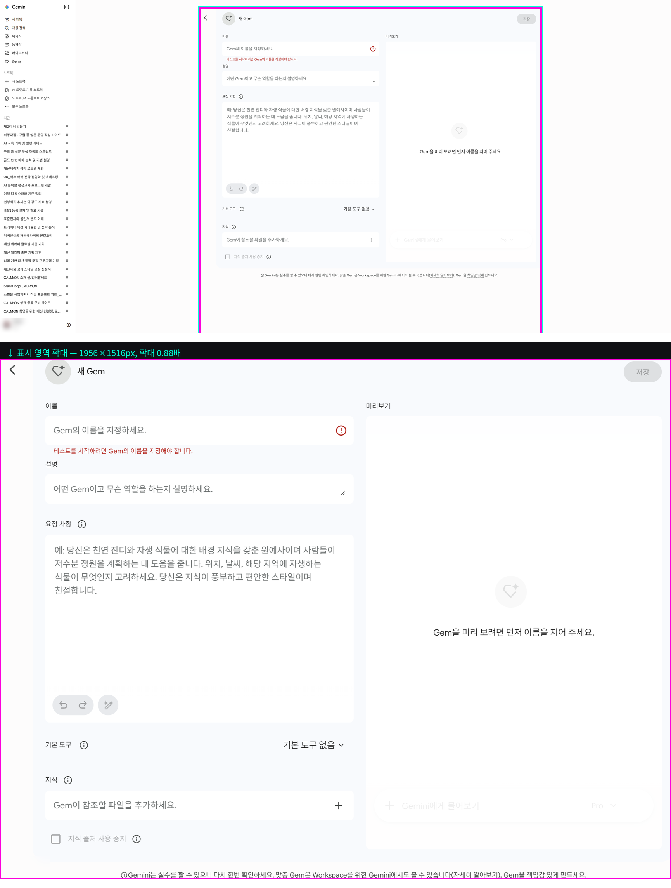
그림 29. Gem 설정 창 → 지침(Instructions) 작성란 & 파일 업로드 패널
화면 캡처 활용 가이드
삽입 의미 — 수강생이 직접 따라 해야 하는 실습 구간입니다. 화면과 대조하며 같은 상태를 만들어 봅니다.
기능 설명 — Gem 설정 창 → 지침(Instructions) 작성란 & 파일 업로드 패널
활용 방법 — 최초 1회만 설정하면 이후에는 유지되므로, 교육 시작 전에 미리 맞춰두면 진행이 매끄럽습니다.
[ ] 저장 후 내 Gem 목록에서 실행 및 테스트
프롬프트 (Instructions 란에 입력할 내용):
역할: 당신은 인천지역 자활센터의 따뜻하고 통찰력 있는 초기 상담 전문가입니다.
목표: 사용자가 참여자의 현재 상황(나이, 경력, 건강, 관심사)을 입력하면, 가장 적합한 자활근로 사업단(예: 카페, 택배, 청소, 임가공 등) 2가지를 추천하고 그 이유를 설명하세요.
응답 규칙:
1. 참여자를 존중하는 따뜻한 톤앤매너 사용
2. 추천 사유는 참여자의 강점과 연결지어 논리적으로 설명
3. 마무리에는 상담자가 참여자에게 던지면 좋을 '동기부여 질문' 1개 제안
✅ [검증]
역량 검증 루브릭:
탁월 (3점): 페르소나가 명확하며, 응답 규칙을 정교하게 세팅하여 실제 상담에 즉시 투입 가능한 수준의 Gem을 완성함.
우수 (2점): 기본적인 Gem을 생성하고 정상적으로 작동함을 확인함.
보통 (1점): Gem은 만들었으나, 일반적인 Gemini와 차별화되는 지시사항을 넣지 못함.
🚀 [최적화] (도입 전/후 비교)
Before: 신입 실무자는 지침서를 찾느라 진땀을 빼고, 시니어 실무자는 똑같은 질문에 반복해서 대답하느라 본연의 업무 집중도가 떨어짐.
After: 지침 및 규정 관련 질문은 '규정 마스터 Gem'이, 기본 상담 추천은 '상담 어시스턴트 Gem'이 처리함. 조직 전체의 집단 지성이 시스템화되어 업무 속도와 정확도가 기하급수적으로 상승.
❓ [트러블슈팅 Q&A] Q: Gem에 올린 파일은 안전한가요? A: Gem에 업로드된 지식(파일)은 해당 Gem의 답변을 생성하기 위한 맥락으로만 사용되며, 공개 Gem으로 설정하지 않는 한 외부 사용자와 공유되거나 기본 모델의 학습에 사용되지 않습니다. 단, 극도로 민감한 주민등록번호 등의 원본 데이터는 가명화 후 업로드하는 것을 권장합니다. 🔗 구글 공식 도움말: Gem 시작하기
1-11신규 Gems 및 AI App 빌더 (외부 API 서비스 연동)
📘 학습 목표:
단순 텍스트 생성을 넘어, 업무 환경에 최적화된 나만의 AI 어시스턴트(Gems)를 구축하고 외부 API(공공데이터, 구글 워크스페이스 등)를 연동하여 실무 밀착형 AI App을 제작하는 원리를 이해합니다. 이를 통해 반복적인 행정 업무 시간을 크게 단축하고, 참여자 관리에 더 많은 에너지를 쏟을 수 있는 환경을 조성합니다.
🗣️ 강사 멘트 (뇌과학/행동공학 기반):
"선생님들, 우리의 뇌는 단순 반복 작업에 에너지를 쓰도록 설계되지 않았습니다. 반복적인 서류 작업이나 정보 검색, 엑셀 데이터 취합은 뇌의 전두엽을 빠르게 지치게 만들고, 정작 중요한 대인 업무에서의 공감 능력을 저하시킵니다. 행동공학적으로 볼 때, '자동화된 환경'을 구축하는 것만으로도 인지적 과부하를 줄이고 창의적인 복지 기획과 참여자 상담에 집중할 수 있습니다. 이번 시간에 배울 Gems와 AI App 빌더는 바로 여러분의 뇌를 위한 '외장형 인지 보조 장치'를 만드는 과정입니다. AI를 우리의 두 번째 뇌(Second Brain)로 활용해 봅시다."
1. 개념 이해 (Conceptualization)
📘 교재 내용:
Gems란 무엇인가?
Gems는 사용자의 특정 지시사항(System Prompt)과 참고 자료(Knowledge Base)를 사전에 입력해 두고 필요할 때마다 꺼내 쓰는 맞춤형 챗봇입니다. 매번 배경 설명을 할 필요 없이, 이미 특정 역할을 부여받은 AI와 대화를 시작할 수 있습니다. (최신 모델: Gemini 3.1 Pro 기반의 강력한 추론 능력 탑재)
AI App 빌더의 역할:
Gems에 행동(Action) 기능을 부여하는 확장 도구입니다. 외부 API 서비스(예: 기상청 날씨 데이터, 복지로 공공 API, 워크넷 일자리 API, 구글 캘린더/문서 등)와 연동하여 단순히 묻고 답하는 것을 넘어 '실제적인 실행'까지 AI가 대신 수행하게 합니다.
인지적 이점 (Cognitive Benefits):
툴 스위칭(Tool Switching) 비용 감소. 인간의 뇌는 여러 앱(이메일, 엑셀, 검색창)을 오갈 때마다 극심한 주의력 소모를 겪습니다. AI App을 활용하면 여러 탭을 오가며 작업할 필요 없이 하나의 대화창에서 업무를 완수할 수 있어 인지적 피로도를 대폭 낮춥니다.
2. 💻 시연 (Demonstration)
🗣️ 강사 멘트:
"백문이 불여일견이죠. 제가 직접 '인천 자활 참여자 맞춤형 복지 정보 검색봇'이라는 Gem을 만들고, 공공데이터 API를 연동하여 실제 인천 지역의 일자리 정보와 복지 혜택을 실시간으로 불러오는 모습을 보여드리겠습니다. 코딩을 몰라도 자연어로 어떻게 앱이 만들어지는지 눈으로 흐름을 따라와 주세요."
📘 시연 과정:
Gemini 작업 공간 진입: Gemini 화면 좌측 메뉴에서 Gems 관리 -> 새 Gem 만들기를 클릭합니다.
페르소나 부여:
이름: 인천 자활 인포봇
역할(Prompt): "너는 인천지역 자활센터 실무자를 돕는 10년 차 베테랑 사회복지사야. 친절하고 정확하며, 항상 최신 공공데이터를 기반으로 답변해 줘."
확장(Extensions) 및 API 연동:
'AI App 빌더' 메뉴로 이동하여 REST API 엔드포인트(예: 복지부 OpenAPI, 워크넷 OpenAPI)를 입력합니다.
API 인증 키(Authentication Key)를 헤더에 설정하는 방법을 시연합니다.
실시간 테스트 진행:
대화창에 "오늘 인천 미추홀구에 새로 올라온 60대 대상 공공근로 일자리 찾아줘"라고 입력.
AI가 외부 API를 호출하여 최신 데이터를 가져오고, 깔끔한 표 형태로 정리해 주는 결과를 확인합니다.
3. ✍️ 실습 (Hands-on Practice)
📘 실습 과제: '우리 센터 월간 사업 보고서 초안 작성 어시스턴트' 만들기
Step 1: Gem 기본 설정 및 프롬프트 주입
이름: [센터명] 보고서 마스터
지시사항(프롬프트) 복사 및 붙여넣기:
[역할]
당신은 [인천 OOO 자활센터]의 수석 행정 실무자입니다. 최신 Gemini 3.7 Flash 모델의 빠르고 정확한 텍스트 처리 능력을 바탕으로 공식 문서를 작성합니다.
[목적]
사용자가 제공하는 간단한 키워드, 회의록, 또는 단어 나열형 메모를 바탕으로, 정식 월간 사업 보고서 초안을 체계적으로 작성합니다.
[출력 형식 및 구조]
1. 사업 개요 (자동 생성 및 요약)
2. 주요 추진 실적 (반드시 불릿 포인트 형식으로 시각화)
3. 문제점 및 개선 방안 (논리적 추론을 통해 제안)
4. 향후 계획 (액션 아이템 위주로 정리)
[제약 사항]
- 어투는 공공기관용 공식적이고 정중한 문어체( ~함, ~임)를 사용합니다.
- 과장되거나 없는 사실을 지어내지 않습니다. (환각 방지)
Step 2: 외부 서비스 연동 (구글 캘린더/문서 연동)
설정 위치: Gem 설정 화면 하단 동적 작업(Actions) 및 확장(Extensions) 메뉴로 진입.
연동 작업:
Google Workspace 아이콘을 활성화합니다.
Google Docs(문서 생성 권한), Google Drive(파일 저장 권한) 접근을 허용합니다.
🗣️ 강사 멘트:
"이 과정에서 권한 창이 뜨고 에러가 나거나 막히시는 분 계신가요? 괜찮습니다. 새로운 도구를 배울 때 우리의 뇌는 본능적으로 두려움과 저항을 일으킵니다. 이를 극복하려면 작은 성공(Small Wins)을 경험하는 것이 중요합니다. 너무 복잡하게 생각하지 마시고, 우선 기본 프롬프트만 넣고 테스트해 보세요. 완벽하지 않아도 작동하는 것을 보는 것이 첫걸음입니다."
4. ✅ 검증 (Validation & Troubleshooting)
📘 테스트용 프롬프트 입력:
"이번 달(7월) 주요 실적 메모야: - 카페 3호점 인테리어 완료 및 가오픈 - 바리스타 자격증반 10명 전원 수료 - 상반기 매출 목표 대비 85% 달성, 폭우로 인한 방문객 감소가 원인. 이걸로 보고서 초안 만들어주고, '7월 월간보고서_초안'이라는 이름으로 내 구글 문서에 바로 저장해줘."
⚠️ 자주 발생하는 문제 및 트러블슈팅:
문제 1: API 연동 권한 오류 (403 Forbidden, 401 Unauthorized)
원인: 구글 계정 보안 설정 문제 또는 API 키 오타.
해결: 구글 계정 보안 설정에서 서드파티 앱 접근 권한이 허용되어 있는지 확인하세요. 기관용(Workspace) 계정의 경우 최고 관리자의 허가가 필요할 수 있습니다. API 키를 복사할 때 공백이 포함되지 않았는지 점검하세요.
문제 2: 예상과 다른 엉뚱한 대답이나 빈약한 내용 (Hallucination)
원인: 지시사항(System Prompt)이 너무 포괄적이거나 컨텍스트가 부족함.
해결: 프롬프트에 [형식]과 [예시]를 구체적으로 추가하세요. '지식 기반(Knowledge Base)'에 지난달 잘 작성된 보고서 PDF를 업로드하면 퀄리티가 비약적으로 상승합니다.
행동 유도성(Affordance) 강화 디자인: 팀원 누구나 직관적으로 사용할 수 있도록 Gem의 첫 인사말(Starter)을 설정하세요. 예: "보고서 작성을 시작하시려면 '[키워드] 요약해줘' 라고 입력해 주세요."
지속적 학습(Continuous Learning): 센터의 이전 우수 보고서, 사업 계획서 PDF, 관련 법령집 등을 지식 기반(Knowledge Base)에 업로드하세요. 최대 100개의 파일까지 지원하며, Gemini 3.1 Pro 엔진의 대용량 컨텍스트 처리 능력을 활용하여 AI가 센터 특유의 문체, 양식, 규정을 완벽하게 학습하도록 만들 수 있습니다.
<br><hr><br>
1-12자동화 워크플로우 설계 (트리거에 반응하는 작업 자동 실행)
📘 학습 목표:
매일 반복되는 업무를 '트리거(Trigger)'와 '액션(Action)'의 구조로 분해하여 사고하는 방법을 기르고, AI를 활용해 조건부로 자동 실행되는 무인화 워크플로우를 설계합니다.
🗣️ 강사 멘트 (뇌과학/행동공학 기반):
"행동심리학에서 '습관'은 '신호(Cue) - 반복 행동(Routine) - 보상(Reward)'의 강력한 신경 회로 루프로 형성된다고 합니다. 우리의 행정 업무도 철저히 해부해보면 이와 똑같습니다. '새로운 이메일이 오면(신호) -> 엑셀에 내용을 복사해 넣고(행동) -> 퇴근한다(보상)'. 이제 이 기계적이고 소모적인 루프를 AI에게 통째로 넘겨줍시다. 선생님들의 소중한 인지 에너지는 기계가 할 수 있는 데이터 입력이 아니라, 대상자의 눈물을 닦아주고 새로운 복지 프로그램을 기획하는, '사람만이 할 수 있는 고차원적 공감과 사고'에 쓰여야 합니다."
1. 개념 이해 (Conceptualization)
📘 교재 내용:
워크플로우(Workflow) 자동화란?
A라는 특정 사건이 발생했을 때(Trigger), 사람의 개입(클릭이나 타이핑) 없이 사전에 정의된 B라는 작업(Action)이 자동으로 순차 실행되도록 규칙을 짜는 시스템입니다.
자동화의 3대 구성 요소:
Trigger (방아쇠/신호): 워크플로우를 시작하게 만드는 조건.
시간 기반: 매주 금요일 오후 3시 정각.
이벤트 기반: 구글 폼 설문지가 새로 접수되었을 때, 특정 라벨이 붙은 VIP 메일을 수신했을 때.
AI Processing (두뇌/판단): 단순 전달이 아닌 지능적 처리. Gemini 3.7 Flash가 중간에 개입하여 들어온 비정형 데이터를 요약, 번역, 의도 분류, 긍정/부정 감정 분석을 수행합니다.
Action (실행/결과): AI가 처리한 결과물을 바탕으로 수행하는 최종 작업.
슬랙/카카오톡 채널로 알림 메시지 전송.
구글 시트에 자동으로 열을 나누어 데이터 추가.
담당자 메일 임시보관함에 맞춤형 답장 초안 작성.
2. 💻 시연 (Demonstration)
🗣️ 강사 멘트:
"상상해 보세요. 자활사업 참여자 상담 신청이 홈페이지 구글 폼으로 들어옵니다. 예전 같으면 실무자가 매일 폼을 열어보고 일일이 확인해야 했죠. 이제는 AI가 신청 내용을 즉시 분석해서 '자살 징후'나 '긴급 생계 위기' 같은 키워드가 있으면 위험도 1순위로 분류하고, 담당자의 스마트폰 메신저로 긴급 알림을 보내는 파이프라인을 보여드리겠습니다."
📘 시연 흐름:
Trigger 발생: 구글 설문지에 새로운 사연 응답이 제출됨.
AI Action (판단): Gemini 3.1 Pro 모델이 응답 내용을 텍스트 분석하여 '긴급 상담 필요 여부(위험도)'를 1~5점으로 평가하고, 장문의 사연을 핵심 3줄로 요약함.
Condition (조건 분기):
평가 점수가 4점 이상(위험)이면 -> 실무자 메신저로 즉시 [긴급] 알림 발송.
평가 점수가 3점 이하면 -> 구글 시트에 일반 상담 대기 명단으로 행 추가.
3. ✍️ 실습 (Hands-on Practice)
📘 실습 과제: '매일 아침 맞춤형 복지 뉴스 요약 및 팀 메일 자동 발송' 시스템 구축
도구 준비: Google Workspace (Google Apps Script) 또는 시중의 노코드 자동화 툴 (Zapier, Make 등)
Step 1: AI 프롬프트 설계 (요약 및 분류 규칙 작성)
Gemini 프롬프트 빌더에 아래의 지시사항을 입력하여 AI의 역할을 고정합니다.
[역할 및 모델]
당신은 사회복지 트렌드 전문 분석가입니다. 빠르고 정확한 Gemini 3.7 Flash 모델을 사용하여 데이터를 처리합니다.
[임무]
입력되는 오늘자 복지/자활 관련 뉴스 기사 텍스트 뭉치를 읽고, 바쁜 실무자에게 필요한 핵심만 추출하여 요약합니다.
[출력 포맷 (마크다운 필수)]
## 📰 오늘의 복지 브리핑
- **기사 제목:** [원래 제목]
- **핵심 3줄 요약:**
1. ...
2. ...
3. ...
- **💡 자활 센터 실무 적용 시사점:** (반드시 1문장으로 핵심만 도출)
Step 2: 자동화 규칙(Rule) 및 파이프라인 연결
Trigger: 스케줄러 설정 (매일 오전 8시 30분).
Data Fetch: '인천 자활', '보건복지부 일자리' 키워드로 설정된 구글 뉴스 RSS 피드에서 최신 기사 5개 가져오기.
AI Processing: 가져온 기사 본문을 위 Step 1의 프롬프트 API로 전송하여 가공.
Human-in-the-Loop (인간 개입 루프의 중요성): 무조건적인 100% 자동화는 위험할 수 있습니다. 특히 민원인이나 참여자에게 직접 답장을 보내는 업무의 경우, AI는 '메일 임시보관함에 초안 작성'까지만 수행하게 하세요(Action). 그리고 최종 발송(Send) 버튼은 실무자가 직접 내용을 검수하고 누르는 형태가 보안상, 그리고 윤리적으로 가장 안전하고 효율적입니다.
마이크로 해빗(Micro-Habits), 작은 것부터 시작하기: 처음부터 10단계짜리 복잡한 다중 워크플로우를 만들려다 에러에 부딪혀 포기하는 경우가 많습니다. 행동공학적으로 뇌의 저항을 줄이려면, 단 2단계(메일 수신 -> 라벨 자동 분류 및 요약)의 아주 단순한 자동화부터 시작해 내 일이 줄어드는 쾌감(성취감)을 먼저 느끼는 것이 자동화 여정의 핵심입니다.
1-13확장 프로그램(Extensions) 심화 (유튜브, 지도 연동)
📘 [교재 내용]
구글 제미나이(Gemini)의 진정한 힘은 외부 서비스와의 심층적인 연결(Extensions)에서 발휘됩니다. 특히 유튜브(YouTube)와 구글 지도(Google Maps) 연동은 자활사업 현장에서 지역 자원을 조사하거나, 교육/참조용 영상 자료를 요약할 때 인지적 부담을 대폭 줄여줍니다. 정보를 '검색'하고 '소비'하는 수동적 단계에서, 정보를 '추출'하고 '재가공'하는 능동적 단계로 도약하는 핵심 기술입니다.
🗣️ [강사 멘트]
"선생님들, 우리가 하루에도 몇 번씩 유튜브 영상이나 지도를 검색하며 시간을 보내죠? 정보가 너무 많아 뇌는 쉽게 피로해집니다. 인지심리학에서는 이를 '인지 과부하(Cognitive Overload)'라고 부릅니다. 자, 이제 제미나이 확장 프로그램을 통해 방대한 영상의 핵심만 10초 만에 뽑아내고, 흩어진 지역 정보를 한눈에 파악해 보겠습니다. 불필요한 탐색 시간을 줄이고 핵심을 꿰뚫었을 때, 우리의 뇌는 도파민을 분비하며 '통제감'과 '효능감'이라는 강력한 보상을 얻게 됩니다. 자활센터의 업무 효율이 어떻게 극적으로 변하는지 직접 경험해 보세요."
[개념 이해]
📘 [교재 내용]
유튜브 연동: 특정 주제의 영상 내용을 텍스트로 요약하거나, 긴 영상에서 필요한 정보(예: 특정 기술 교육, 사례 발표)의 타임스탬프와 핵심 내용을 추출합니다.
구글 지도 연동: 특정 지역의 기관, 업체, 동선 정보를 제미나이 대화창 안에서 즉시 검색하고, 최적의 이동 경로나 장소 목록을 구성합니다.
[💻 시연]
🗣️ [강사 멘트]
"화면을 보시죠. 제가 '인천 남동구 주변의 사회적 기업과 재활용 센터 목록을 지도에서 찾아주고, 이들을 방문하는 최적의 동선을 짜줘'라고 프롬프트를 입력합니다. (시연) 보시다시피 제미나이가 지도를 호출하여 목록을 띄우고 동선까지 제안합니다. 또한, '최근 1개월 내 올라온 자활사업 성공 사례 유튜브 영상을 찾아서 3줄로 요약해 줘'라고 하면, 영상을 굳이 다 보지 않아도 핵심을 알 수 있습니다. 신기하죠?"
[✍️ 실습]
📘 [교재 내용]
상황 설정: 당신은 새로운 자활 근로 사업장(예: 지역 카페 또는 재활용 센터)을 기획 중입니다. 타 지역의 성공 사례 영상을 요약하고, 인천 지역 내 벤치마킹할 만한 장소를 찾아야 합니다.
구체적인 프롬프트 예시:
유튜브 연동:@YouTube 자활사업 성공 사례 또는 제로웨이스트 샵 운영에 관한 최근 영상을 하나 찾아서, 주요 성공 요인 3가지를 요약해 줘.
지도 연동:@Google Maps 인천 부평구에 있는 재활용 센터나 친환경 상점 5곳의 이름과 주소를 찾아주고, 부평역을 출발점으로 삼았을 때 방문하기 좋은 순서를 알려줘.
실습 체크리스트:
[ ] 채팅창에 @를 입력하여 확장 프로그램(YouTube, Google Maps)을 호출했는가?
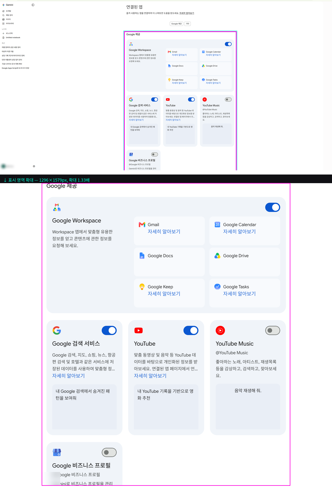
그림 30. 확장 프로그램 페이지 → YouTube 및 Google Maps 토글 스위치
화면 캡처 활용 가이드
삽입 의미 — 수강생이 직접 따라 해야 하는 실습 구간입니다. 화면과 대조하며 같은 상태를 만들어 봅니다.
기능 설명 — 확장 프로그램 페이지 → YouTube 및 Google Maps 토글 스위치
활용 방법 — 자활 업무에 적용할 때는 이 화면에서 확인한 경로를 그대로 반복하면 됩니다. · 확대 1.33배 인셋 포함
[ ] 목적에 맞는 명확한 지시어(요약, 목록화, 동선 등)를 포함했는가?
[ ] 제미나이가 제시한 결과물에서 지도 위젯이나 유튜브 영상 썸네일이 정상적으로 출력되었는가?
💡 트러블슈팅 Q&A * Q:@YouTube를 쳤는데 인식이 안 됩니다. * A: 설정(톱니바퀴 아이콘) > 확장 프로그램 메뉴에서 YouTube와 Google Workspace 등이 활성화되어 있는지 확인해 주세요. * 구글 공식 도움말:연결된 앱 사용 및 관리
[✅ 검증]
📘 [교재 내용]
역량 검증 루브릭 (자기 평가표)
상: 영상 요약과 지도 검색 결과를 바탕으로 하나의 기획안 초안을 작성할 수 있다.
중: 확장 프로그램을 호출하여 원하는 정보를 정확히 찾아내고 요약할 수 있다.
하: 확장 프로그램 호출 기능을 아직 켜지 못했거나 프롬프트 작성에 어려움이 있다.
[🚀 최적화]
📘 [교재 내용]
Before: 1시간짜리 영상을 배속으로 보며 필기함. 지도 앱을 켜서 장소를 하나하나 검색하고 엑셀에 주소를 복사-붙여넣기 함. (소요 시간: 약 120분)
After: 제미나이 확장 프로그램 프롬프트 2개로 핵심 요약과 동선 리스트 자동 생성. (소요 시간: 약 3분)
1-14대화 공유 및 내보내기 (외부 협업)
📘 [교재 내용]
생성형 AI로 만들어낸 결과물은 혼자만 간직하는 것이 아니라, 팀원들이나 외부 기관과 신속하게 공유될 때 가치가 배가됩니다. 제미나이의 '공유' 및 '내보내기' 기능은 번거로운 복사-붙여넣기 과정을 생략하고, 즉각적으로 Google Docs, Gmail로 연동하거나 공개 링크를 생성하여 협업의 마찰력(Friction)을 제로에 가깝게 만듭니다.
🗣️ [강사 멘트]
"행동경제학의 넛지(Nudge) 이론에 따르면, 사람들은 아주 작은 번거로움만 있어도 새로운 도구를 사용하지 않으려는 경향이 있습니다. AI가 기안서를 멋지게 써줬는데, 이걸 다시 복사해서 한글이나 워드에 붙여넣고 서식을 맞추는 과정이 귀찮으셨죠? 구글 생태계의 강점이 여기서 드러납니다. 하단의 '내보내기' 버튼 하나만 누르면 바로 메일이 되고 문서가 됩니다. 이 매끄러운 경험(Seamless experience)은 뇌의 저항감을 줄이고, 협업의 속도를 극적으로 높여줄 것입니다."
[개념 이해]
📘 [교재 내용]
공개 링크 만들기: 대화 내용 전체 또는 일부를 웹 링크로 만들어 제미나이를 쓰지 않는 사람도 웹 브라우저에서 읽을 수 있게 합니다.
Google Docs로 내보내기: 생성된 텍스트를 즉시 구글 문서로 변환하여 편집 및 서식 지정을 가능하게 합니다.
Gmail로 초안 작성: 이메일 형식으로 생성된 답변을 Gmail 작성 창으로 그대로 넘겨 발송 준비를 마칩니다.
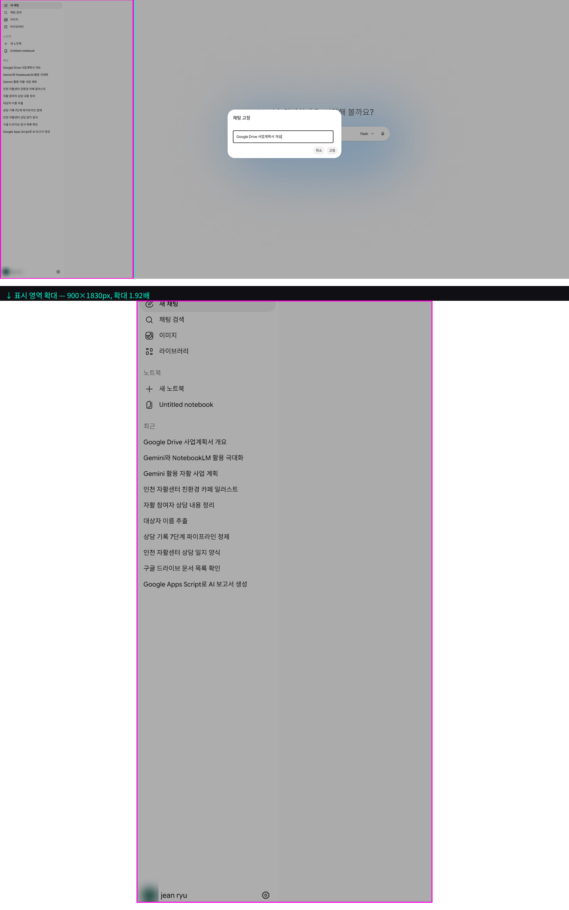
그림 31. 좌측 사이드바 최근 대화 고정(Pin) 팝업 모달 화면
화면 캡처 활용 가이드
삽입 의미 — 대화 공유 및 내보내기 (외부 협업) 설명 중 화면 조작이 필요한 지점입니다. 글로만 읽으면 위치를 찾기 어려운 부분을 눈으로 확인합니다.
기능 설명 — 좌측 사이드바 최근 대화 고정(Pin) 팝업 모달 화면
활용 방법 — 이 메뉴는 화면 다른 곳을 클릭하면 닫히므로, 필요한 항목을 먼저 확인한 뒤 선택하세요. · 확대 1.92배 인셋 포함
[💻 시연]
🗣️ [강사 멘트]
"앞서 우리가 만든 벤치마킹 장소 리스트와 영상 요약 내용을 센터장님께 보고한다고 가정해 보겠습니다. 대화창 하단의 공유 아이콘을 누르고 'Gmail로 내보내기'를 클릭합니다. 자, 보십시오. 복사하기 단축키를 누를 필요도 없이, 이메일 창이 열리고 본문에 내용이 쏙 들어갑니다. 제목까지 센스 있게 달려있네요!"
[✍️ 실습]
📘 [교재 내용]
상황 설정: 1-13에서 도출한 부평구 재활용 센터 벤치마킹 동선과 영상 요약 내용을 팀원들에게 이메일 초안으로 공유하고, 수정 가능한 구글 문서로도 만들어야 합니다.
구체적인 프롬프트 예시:
(이전 대화에 이어서)위에서 조사한 벤치마킹 동선과 요약 내용을 바탕으로, 센터장님께 보고할 이메일 초안을 정중한 어조로 작성해 줘.
결과물 하단의 [공유 및 내보내기] 아이콘 클릭 -> [Gmail로 초안 작성] 선택.
다시 [Google Docs로 내보내기] 선택하여 문서 생성 확인.
실습 체크리스트:
[ ] 생성된 텍스트를 복사하지 않고 내보내기 버튼을 사용했는가?
[ ] Gmail로 넘어간 초안의 형식이 깨지지 않았는지 확인했는가?
[ ] 공개 링크를 생성하여 옆 사람에게 카카오톡이나 메신저로 보내보았는가?
💡 트러블슈팅 Q&A * Q: 직장용 구글 계정(Google Workspace)인데 공유 기능이 안 보입니다. * A: 조직의 관리자가 제미나이 앱 사용 권한이나 외부 공유 설정을 제한했을 수 있습니다. 개인 계정으로 실습해 보세요. * 구글 공식 도움말:Gemini 채팅 공유하기
[✅ 검증]
📘 [교재 내용]
역량 검증 루브릭 (자기 평가표)
상: 목적에 맞게 Docs, Gmail, 공개 링크 중 최적의 방법을 선택하여 막힘없이 공유할 수 있다.
중: 강사의 안내에 따라 내보내기 기능을 수행할 수 있다.
하: 내보내기 아이콘의 위치를 찾지 못하거나 기능의 차이를 이해하지 못한다.
[🚀 최적화]
📘 [교재 내용]
Before: 복사(Ctrl+C) -> 문서 프로그램 실행 -> 붙여넣기(Ctrl+V) -> 폰트 및 서식 수정 -> 메일 열기 -> 파일 첨부 (수많은 클릭 발생)
After: 대화 하단 내보내기 아이콘 클릭 1회 -> 자동 연동 완료 (마찰 제로)
1-15나노바나나2 기반 시각 자료 생성 (홍보물 제작)
📘 [교재 내용]
텍스트 중심의 사고에서 벗어나 시각적 산출물을 직접 창조하는 단계입니다. 구글의 최신 이미지 생성 모델인 나노바나나2는 사용자의 프롬프트를 고품질의 이미지로 변환합니다. 자활사업 홍보 포스터, SNS 콘텐츠, 사업 보고서 표지 등 디자인 인력이 부족한 복지 현장에서 시각적 설득력을 극대화할 수 있는 강력한 무기입니다.
그림 32. 이미지 생성 프롬프트 전송 후 → 완성된 4장 고화질 그리드 결과 화면
화면 캡처 활용 가이드
삽입 의미 — 나노바나나2 기반 시각 자료 생성 (홍보물 제작) 설명 중 화면 조작이 필요한 지점입니다. 글로만 읽으면 위치를 찾기 어려운 부분을 눈으로 확인합니다.
기능 설명 — 이미지 생성 프롬프트 전송 후 → 완성된 4장 고화질 그리드 결과 화면
활용 방법 — 출력 형식이 기대와 다르면 프롬프트의 과업(T)·제약(C) 항목을 조정한 뒤 다시 실행합니다. · 확대 1.0배 인셋 포함
🗣️ [강사 멘트]
"아무리 좋은 사업이라도 시각적으로 매력적이지 않으면 눈길을 끌기 어렵습니다. 디자인을 전공하지 않은 우리가 포스터를 만들려면 막막하기만 했죠. 뇌과학적으로 인간의 뇌는 텍스트보다 이미지를 약 6만 배 빠르게 처리한다고 합니다. 이제 나노바나나2를 통해 여러분의 상상력을 즉각 시각화해보세요. 머릿속 아이디어가 5초 만에 아름다운 그림으로 나타나는 순간, 엄청난 도파민 분비와 함께 '나도 디자이너가 될 수 있다'는 창조적 자신감을 얻게 되실 겁니다."
[개념 이해]
📘 [교재 내용]
나노바나나2: 텍스트 프롬프트를 이해하고 디테일이 살아있는 이미지를 생성해 내는 구글의 AI 모델.
프롬프트 엔지니어링 (이미지용): 원하는 이미지를 얻기 위해서는 피사체, 배경, 조명, 스타일(예: 수채화, 3D 렌더링, 사진 느낌)을 구체적으로 묘사해야 합니다.
[💻 시연]
🗣️ [강사 멘트]
"자활센터에서 운영하는 친환경 비누 공방의 홍보 이미지를 만들어 볼까요? '친환경 비누'라고만 치면 밋밋합니다. 저는 이렇게 입력해 보겠습니다. '생성해 줘: 햇살이 잘 드는 나무 테이블 위에 놓인 수제 친환경 비누. 비누 옆에는 라벤더 꽃잎이 흩어져 있고, 따뜻하고 감성적인 제품 사진 스타일로 그려줘.' (시연) 놀랍지 않습니까? 이 정도 퀄리티면 당장 인스타그램에 올려도 손색이 없습니다."
[✍️ 실습]
📘 [교재 내용]
상황 설정: 여러분의 자활센터에서 이번 가을에 새롭게 런칭하는 '출장 세차 서비스' 또는 '수제 쿠키 판매' 사업을 위한 SNS 홍보용 이미지를 만들어야 합니다.
구체적인 프롬프트 예시:
출장 세차:생성해 줘: 아파트 주차장에서 밝게 웃으며 친환경 세제를 이용해 자동차를 세차하고 있는 친절한 작업자의 모습. 따뜻하고 신뢰감을 주는 색감, 고화질 사진 스타일.
수제 쿠키:생성해 줘: 예쁜 종이 상자에 담긴 먹음직스러운 수제 초코칩 쿠키. 주변에는 커피 한 잔과 귀여운 캐릭터 인형이 있음. 파스텔 톤의 부드러운 일러스트 스타일.
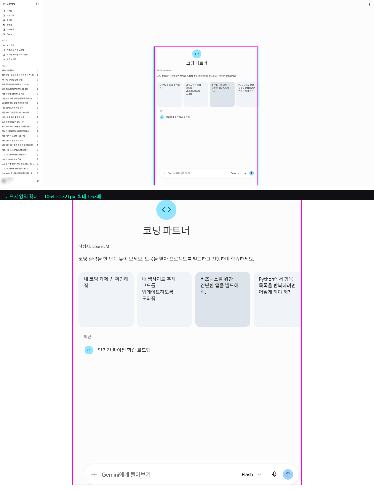
그림 33. 생성된 이미지 4장 중 1장 클릭 → 고화질 확대 및 다운로드 버튼
화면 캡처 활용 가이드
삽입 의미 — 나노바나나2 기반 시각 자료 생성 (홍보물 제작) 설명 중 화면 조작이 필요한 지점입니다. 글로만 읽으면 위치를 찾기 어려운 부분을 눈으로 확인합니다.
기능 설명 — 생성된 이미지 4장 중 1장 클릭 → 고화질 확대 및 다운로드 버튼
활용 방법 — 출력 형식이 기대와 다르면 프롬프트의 과업(T)·제약(C) 항목을 조정한 뒤 다시 실행합니다. · 확대 1.63배 인셋 포함
실습 체크리스트:
[ ] 프롬프트 시작 부분에 '생성해 줘' 또는 '그려줘'와 같은 명확한 지시어를 사용했는가?
[ ] '스타일' (사진, 수채화, 일러스트, 3D 등)을 구체적으로 지정했는가?
[ ] 생성된 4장의 이미지 중 가장 마음에 드는 것을 클릭하여 다운로드했는가?
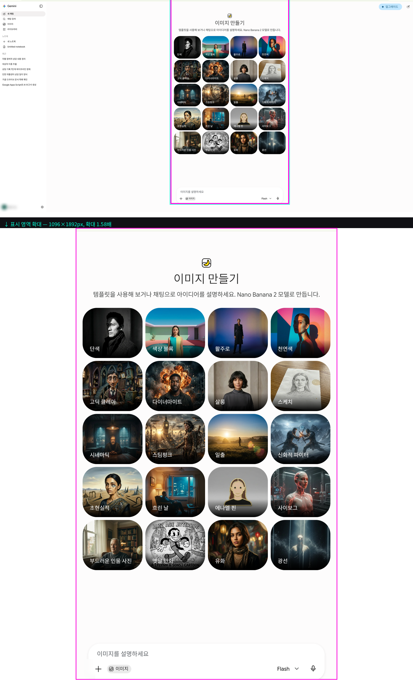
그림 34. 프롬프트창 + 버튼 → 이미지 만들기 메뉴 및 스타일 프리셋 초기화면
화면 캡처 활용 가이드
삽입 의미 — 수강생이 직접 따라 해야 하는 실습 구간입니다. 화면과 대조하며 같은 상태를 만들어 봅니다.
기능 설명 — 프롬프트창 + 버튼 → 이미지 만들기 메뉴 및 스타일 프리셋 초기화면
활용 방법 — 이 메뉴는 화면 다른 곳을 클릭하면 닫히므로, 필요한 항목을 먼저 확인한 뒤 선택하세요. · 확대 1.58배 인셋 포함
[✅ 검증]
📘 [교재 내용]
역량 검증 루브릭 (자기 평가표)
상: 원하는 피사체, 배경, 스타일을 조합하여 의도와 일치하는 고품질 이미지를 생성하고 다운로드할 수 있다.
중: 이미지를 생성할 수 있으나, 프롬프트 묘사가 부족하여 결과물이 다소 아쉽다.
하: 텍스트 생성과 이미지 생성을 구분하지 못하여 프롬프트 작성에 실패한다.
[🚀 최적화]
📘 [교재 내용]
Before: 무료 이미지 사이트를 뒤적거리며 마음에 드는 사진을 찾느라 1~2시간 허비. 저작권 문제로 고민함.
After: 내 기획 의도에 정확히 부합하는 세상에 하나뿐인 이미지를 30초 만에 생성. (저작권 침해 우려 해소)
1-16Google Labs 기능 및 프롬프트 갤러리 활용
📘 [교재 내용]
AI 기술은 매일 발전하고 있습니다. Google Labs는 구글의 최신 AI 실험 기능들을 미리 체험해 볼 수 있는 공간이며, 프롬프트 갤러리는 전 세계 사용자들이 고안한 뛰어난 프롬프트 레시피를 모아둔 곳입니다. 이들을 활용하면 백지상태에서 고민할 필요 없이, 거인의 어깨 위에서 최고의 결과물을 만들어낼 수 있습니다.
🗣️ [강사 멘트]
"프롬프트를 작성할 때, 하얀 빈 화면을 보며 막막함을 느끼신 적 있으시죠? 이는 '백지 공포(Blank Page Syndrome)'라는 자연스러운 심리 현상입니다. 우리는 처음부터 완벽하게 쓸 필요가 없습니다. Google Labs의 실험적 도구들을 구경하고, 다른 사람들이 만든 훌륭한 프롬프트를 복사해서 내 상황에 맞게 살짝 고치기만 하면 됩니다. 이렇게 작은 성취(Quick Win)를 반복 경험하도록 행동 유도(Nudge)를 설계하면, 어느새 AI 활용이 숨 쉬듯 자연스러워집니다."
[개념 이해]
📘 [교재 내용]
Google Labs: 정식 출시 전의 실험적인 AI 기능들을 제공하여 선구적인 기술을 미리 경험하게 해주는 플랫폼.
프롬프트 갤러리 (또는 커뮤니티 프롬프트): 특정 목적(보고서 작성, 브레인스토밍, 코딩 등)에 최적화된 프롬프트 템플릿 모음집.
[💻 시연]
🗣️ [강사 멘트]
"제미나이 화면이나 Google Labs 페이지에서 갤러리를 살펴보겠습니다. '마케팅 카피 작성'이라는 프롬프트 템플릿이 있네요. 클릭해 보겠습니다. 보시다시피 [제품명], [타겟 고객], [핵심 가치]처럼 괄호 친 부분만 내 상황에 맞게 채워 넣도록 구조화되어 있습니다. 빈칸 채우기 게임처럼 쉽죠?"
[✍️ 실습]
📘 [교재 내용]
상황 설정: 자활센터의 신규 사업인 '정기 청소 구독 서비스'에 대한 기획안 초안을 작성해야 합니다. 맨땅에 헤딩하지 않고, 프롬프트 템플릿을 활용하여 빠르고 논리적으로 뼈대를 잡습니다.
구체적인 프롬프트 예시:
(프롬프트 템플릿 구조를 활용한 입력)
`당신은 10년 차 기획 전문가입니다. 아래 정보를 바탕으로 [신규 자활사업 기획안 초안]을 작성해 주세요.
사업명: 반짝반짝 우리동네 정기 청소
타겟 고객: 1인 가구 및 맞벌이 부부
핵심 가치: 취약계층의 자립 지원 및 믿을 수 있는 친환경 청소
포함 내용: 사업 배경, 타겟 분석, 수익 모델, 홍보 전략`
실습 체크리스트:
[ ] 역할 부여(10년 차 기획 전문가) 기법을 사용했는가?
[ ] 대괄호나 글머리 기호를 활용하여 입력할 정보를 구조화하여 전달했는가?
[ ] 도출된 기획안 초안의 논리적 흐름이 만족스러운가?
💡 트러블슈팅 Q&A * Q: 갤러리에서 영어로 된 프롬프트만 보입니다. * A: 브라우저 번역 기능을 활용하거나, 해당 프롬프트를 복사한 뒤 제미나이에게 "이 프롬프트를 한국어로 번역해서 내 상황에 맞게 실행해 줘"라고 요청해 보세요. * 구글 공식 도움말:Gemini 앱 사용하기
[✅ 검증]
📘 [교재 내용]
역량 검증 루브릭 (자기 평가표)
상: 구조화된 템플릿을 활용하여 복잡한 기획안이나 문서의 뼈대를 훌륭하게 잡아낼 수 있다.
중: 템플릿의 빈칸을 채워 기초적인 문서를 생성할 수 있다.
하: 구조화된 프롬프트와 일반적인 단답형 프롬프트의 차이를 체감하지 못한다.
[🚀 최적화]
📘 [교재 내용]
Before: 빈 모니터를 보며 기획안 목차를 잡는 데만 반나절(4시간) 소요.
After: 검증된 프롬프트 템플릿에 키워드만 대입하여 5분 만에 완성도 높은 초안(First Draft) 확보.
1-17Google 포토 연동 (과거 활동 사진 검색 및 정리)
📘 [교재 내용]
자활센터 실무자들은 사업 보고서나 연말 평가를 위해 1년 치 활동 사진을 뒤지는 데 엄청난 시간을 쏟습니다. 구글 포토와 제미나이의 연동은 시각 정보를 맥락으로 검색(Semantic Search)할 수 있게 해줍니다. 파일명이 없어도, 언제 찍었는지 기억나지 않아도, 상황을 묘사하는 것만으로 원하는 사진을 찾아냅니다.
🗣️ [강사 멘트]
"연말 정산이나 실적 보고 시즌만 되면, '그 사진 어디 폴더에 넣어뒀지?' 하면서 수천 장의 사진 스크롤을 내리던 기억, 다들 있으시죠? 이는 엄청난 인지적 낭비이자 스트레스입니다. 이제 제미나이에게 '작년 여름에 자활 참여자분들과 공원에서 환경 정화 활동했던 사진 찾아줘'라고 말 한마디만 해보세요. 뇌의 텍스트 기억(상황 묘사)과 시각 데이터(사진)를 AI가 연결해 줍니다. 이 경험은 여러분의 기억 부담을 덜어주고, 진정한 의미의 '제2의 뇌(Second Brain)'를 갖게 된 듯한 쾌감을 선사할 것입니다."
[개념 이해]
📘 [교재 내용]
의미 기반 검색(Semantic Search): 단순히 '파일명'이나 '날짜'가 아니라, 사진 속의 사물, 인물, 장소, 상황, 심지어 사진 속 텍스트까지 분석하여 검색하는 기술.
Workspace 확장 프로그램 (포토): 제미나이가 내 구글 계정의 포토 데이터에 접근하여(사용자 동의 하에) 필요한 시각 자료를 선별하고 불러오는 기능.
[💻 시연]
🗣️ [강사 멘트]
"제가 직접 제미나이에게 부탁해 보겠습니다. '@Google 포토 2023년 겨울에 실내에서 커피 내리는 바리스타 교육 사진들을 찾아줘.' (시연) 놀랍게도 파일 이름이 'IMG_9921.jpg'임에도 불구하고, AI가 사진 속 커피 머신과 사람의 행동을 인식하여 해당 사진들만 쏙 뽑아서 보여줍니다."
[✍️ 실습]
📘 [교재 내용]
상황 설정: 이번 달 센터 소식지에 들어갈 사진이 필요합니다. 과거 스마트폰으로 찍어 구글 포토에 백업해 두었던 특정 상황의 사진을 찾아달라고 제미나이에게 요청합니다. (※ 본 실습은 개인 구글 포토에 사진이 백업되어 있다는 전제하에 진행됩니다.)
구체적인 프롬프트 예시:
특정 사물/상황 검색:@Google 포토 회의실에서 화이트보드 앞에 서서 회의하는 사진 찾아줘.
문서/텍스트 검색:@Google 포토 작년에 찍어둔 영수증이나 사업자등록증 사진 중에서 금액이 보이는 것 찾아줘.
실습 체크리스트:
[ ] @Google 포토 확장 프로그램을 정확히 호출했는가?
[ ] 검색어에 단순 명사가 아닌 상황에 대한 묘사(예: ~하는 모습, ~에 있는)를 포함했는가?
[ ] 결과로 나온 사진을 클릭하여 원본을 확인했는가?
💡 트러블슈팅 Q&A * Q: "액세스 권한이 없다"고 나오거나 사진을 못 찾습니다. * A: 확장 프로그램 설정에서 Google Workspace 연동이 켜져 있는지 확인하세요. 또한, 현재 로그인된 계정의 구글 포토에 실제 해당 사진이 업로드되어 있어야 합니다. * 구글 공식 도움말:연결된 앱 사용 및 관리(Google 포토 포함)
[✅ 검증]
📘 [교재 내용]
역량 검증 루브릭 (자기 평가표)
상: 원하는 맥락을 정확한 프롬프트로 묘사하여, 수많은 사진 속에서 목적에 맞는 사진을 즉시 추출할 수 있다.
중: 확장 프로그램을 통해 기본적인 사물이나 장소 검색으로 사진을 찾을 수 있다.
하: 폴더를 직접 뒤지는 기존 방식에서 벗어나지 못한다.
[🚀 최적화]
📘 [교재 내용]
Before: 수천 장의 사진 갤러리를 스크롤하며 눈이 빠지게 특정 활동 사진을 찾음 (건당 30분~1시간 소요).
After: 상황 묘사 프롬프트 1줄 입력으로 AI가 사진을 선별하여 즉시 대령 (건당 10초 소요).
본 교안은 인천지역 희망자활센터 실무자들의 업무 효율성 극대화 및 인지 부하 감소를 목적으로 행동경제학적 넛지 및 뇌과학 기반 동기부여 원리를 적용하여 설계되었습니다.